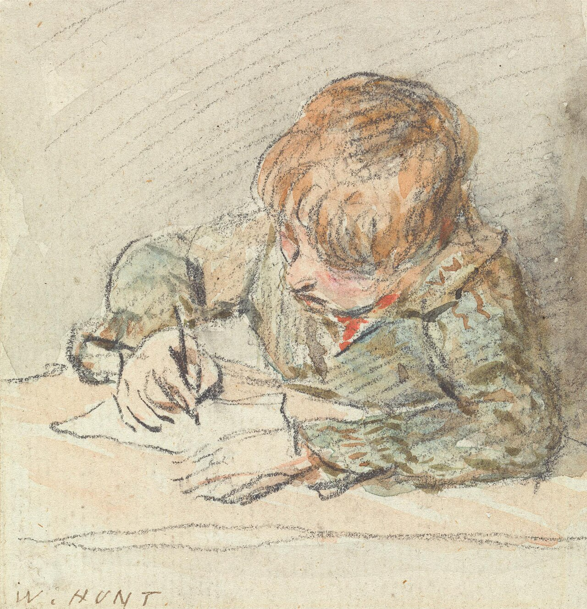
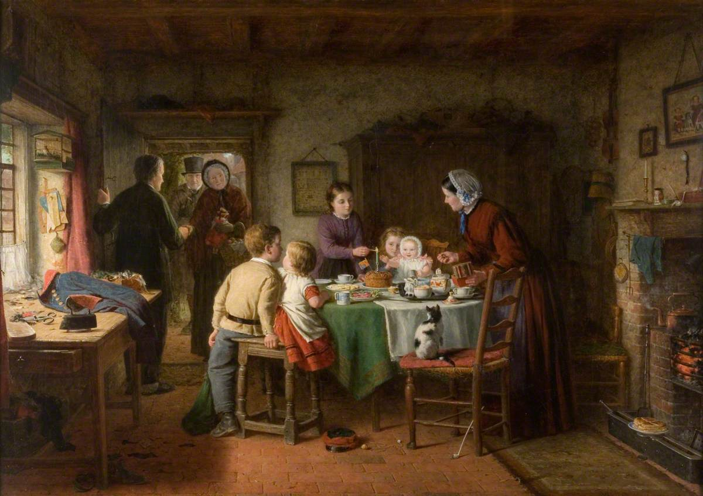
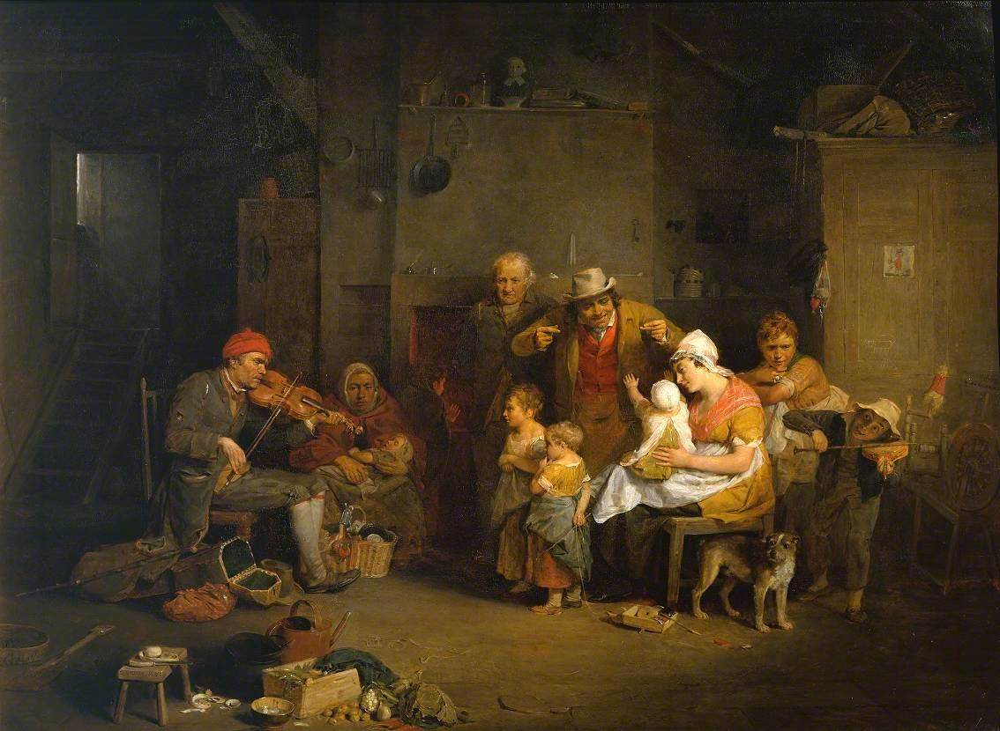
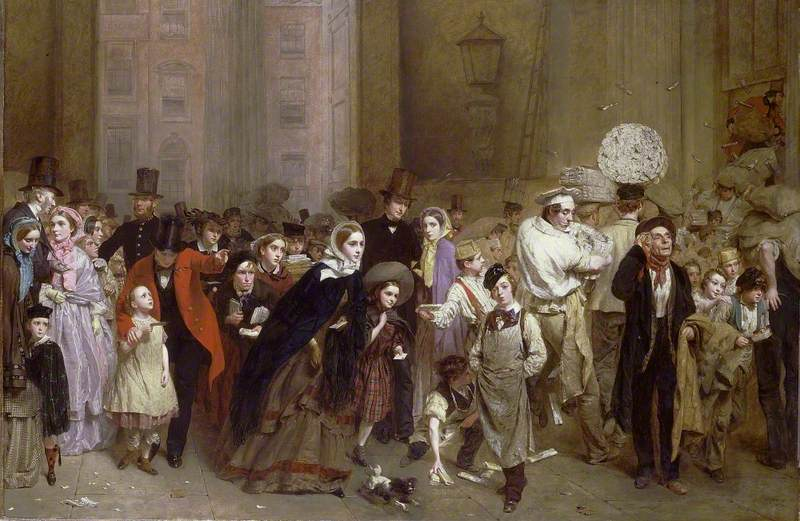
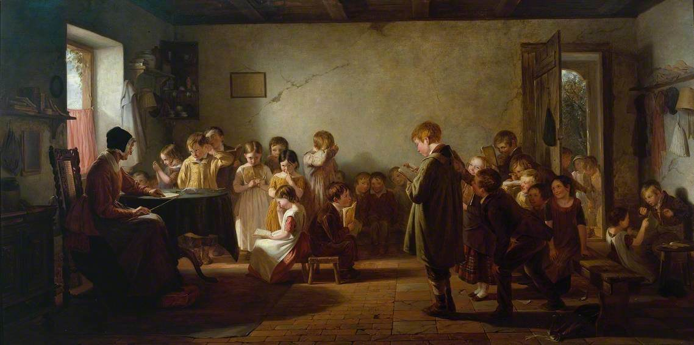

Sans JavaScript, tous les onglets restent visibles à la suite.
Présentation de la séquence
How does a teenager's secret diary reveal the family and the society of 1980s Britain?
The Secret Diary of Adrian Mole, Aged 13¾
The book in a nutshell
Leicester, England, 1 January 1981. Adrian Mole is thirteen and three quarters. He has spots, he thinks he is an intellectual, and nobody understands him.
Day after day, he writes down everything: his love for Pandora, the school bully, his parents' failing marriage, his friendship with an old man called Bert, and the big events of the year, from the Royal Wedding to rising unemployment.
The book was a huge bestseller in Britain and was turned into a TV series in 1985.
Final task · Évaluation sommative
Write and read aloud a week of your own secret diary, either as a teenager in 1981 or as a teenager today, showing how family, school and the world around you shape who you are.
Five dated entries, 250 to 300 words in all, then you read aloud or record your best entry (1 to 2 minutes). You choose what you tell: a diary can stay secret.
Skills
Each activity shows the time it takes ("Time: 10 min") and the skills you practise:
| Tag | Skill | Programme (activité langagière) |
|---|---|---|
| CO | Listening | Compréhension de l'oral |
| CE | Reading | Compréhension de l'écrit |
| PO | Speaking | Expression orale en continu, interaction orale |
| PE | Writing | Expression écrite, interaction écrite |
| Médiation | Explaining, passing on | Médiation |
Overview
| Lesson | Content | Skills | Time |
|---|---|---|---|
| 1 | Dear Diary: discovering the book (diagnostic) | CO · CE · PO · PE | 52 min |
| 2 | Meet Adrian Mole | CE · PO | 52 min |
| 3 | A family falling apart | CE · PO · PE | 52 min |
| 4 | Old Bert and young Adrian | CE · PO | 52 min |
| 5 | Britain in the early 1980s | CO · CE · PO · Médiation | 52 min |
| 6 | Then and now: language focus (reading check) | CO · CE · PE · PO | 52 min |
| 7 | Rules and rebels | CO · CE · PE | 52 min |
| 8 | Final task (1): writing my secret diary | PE | 52 min |
| 9 | Final task (2): reading my diary aloud | PO | 52 min |
| 10 | Final test | CO · CE · PE | 52 min |
Programme et axes
Programme. Programme de langues vivantes du lycée général et technologique, arrêté du 5 mai 2025 publié au BO n° 22 du 29 mai 2025, annexe 4 (anglais). Il s'applique en seconde depuis la rentrée 2025. Niveau visé en fin de seconde : B1+ en LVA (A2+ en LVB).
Axes. Séquence ancrée dans l'axe 2 « Vivre entre générations », objet d'étude « L'évolution de la cellule familiale et de ses représentations », et associée à l'axe 1 « Représentation de soi et rapport à autrui », objet d'étude « Les normes en question : conformité, contestation, réappropriation ». Le programme permet d'associer deux axes reliés par une problématique commune dans une même séquence. La lesson 5 touche aussi l'axe 4 « Défis et transitions ».
Rappel. En seconde, cinq axes sur six doivent être traités dans l'année, dont l'axe 6 « Les pays du Commonwealth : héritages, unité, diversité », obligatoire.
Activités langagières. Le programme de 2025 en nomme six : compréhension de l'oral ; compréhension de l'écrit ; expression orale en continu ; expression écrite ; interaction orale et écrite ; médiation. Chaque lesson indique lesquelles sont travaillées, avec leur durée.
How to read the badges
- CO compréhension de l'oral (listening)
- CE compréhension de l'écrit (reading)
- PO production orale, en continu ou en interaction (speaking)
- PE production écrite (writing)
- Médiation médiation
- Time: 10 min durée de l'activité : un clic lance le minuteur
Version élève cache la fiche prof, les corrigés, la sortie de secours et les notes de gestion de classe. Version prof montre tout. Gérer les onglets permet de cacher les onglets inutiles.
Documents à télécharger
Chaque document existe en PDF, en Word (DOCX) et en LibreOffice (ODT), format A4, une colonne, gros caractères.
- ÉvaluationsPDFDOCXODT
- Fiche de lecturePDFDOCXODT
- MéthodesPDFDOCXODT
- Toutes les fiches imprimablesPDFDOCXODT
- Toute la version dysPDFDOCXODT
- Lesson 1Fiche :PDFDOCXODTFiche tempête :PDFDOCXODTDys :PDFDOCXODT
- Lesson 2Fiche :PDFDOCXODTFiche tempête :PDFDOCXODTDys :PDFDOCXODT
- Lesson 3Fiche :PDFDOCXODTFiche tempête :PDFDOCXODTDys :PDFDOCXODT
- Lesson 4Fiche :PDFDOCXODTFiche tempête :PDFDOCXODTDys :PDFDOCXODT
- Lesson 5Fiche :PDFDOCXODTFiche tempête :PDFDOCXODTDys :PDFDOCXODT
- Lesson 6Fiche :PDFDOCXODTFiche tempête :PDFDOCXODTDys :PDFDOCXODT
- Lesson 7Fiche :PDFDOCXODTFiche tempête :PDFDOCXODTDys :PDFDOCXODT
- Lesson 8Fiche :PDFDOCXODTFiche tempête :PDFDOCXODTDys :PDFDOCXODT
- Lesson 9Fiche :PDFDOCXODTFiche tempête :PDFDOCXODTDys :PDFDOCXODT
- Lesson 10Fiche :PDFDOCXODTFiche tempête :PDFDOCXODTDys :PDFDOCXODT
© 2026 Madame Carole Paoli Pompougnac · CC BY-NC-SA 4.0
Fiche professeur : la séquence en un coup d'œil
Teacher notes are in British English. They are written for any colleague, including a beginner or a contract teacher who discovers the class the day before.
You are new to this sequence? Start here
Take a deep breath: everything you need is in this document. Each lesson works the same way, so after Lesson 1 you will know the routine.
- The day before: read the "Fiche prof" and "Déroulé minuté" tabs of the lesson (ten minutes). Print the "Fiche imprimable" for every student and two copies of the "Fiche tempête".
- Check the video, if there is one: open the link, watch the extract, note the exact start and end times in the box provided. Never show more than the extract.
- In class, follow the timing. Each lesson is timed on 52 minutes inside a 55-minute slot, so you have three minutes of margin for settling in and packing up.
- At the Point d'arrêt (always around minute 44): look at the clock. If you are on time, finish normally. If you are late, or the class is restless, switch to the Sortie de secours (8 minutes): it secures the three outcomes of every lesson.
- Three outcomes, every lesson: a trace écrite in the notebook, one spoken contribution from every student (even one sentence), and homework written in the diary and on Pronote.
- After the lesson: fill in the private "Météo de la classe" (two minutes). It helps you plan the next lesson and spot a student who needs attention.
You do not need to be an expert on the 1980s or on the novel. The keys give you the answers, and the reading plan below tells you which entries matter.
Reading plan
The novel is short and made of dated entries. Ask students to read about 25 pages a week at home, at their own pace, and to bring their copy to every lesson.
| Before | Students read |
|---|---|
| Lesson 2 | The January entries |
| Lesson 3 | February to April (the Lucases, Mum leaves) |
| Lesson 4 | Re-read the entries about Bert Baxter and the Good Samaritans (from Monday January 19th) |
| Lesson 5 | May to July (including the Royal Wedding, Wednesday July 29th) |
| Lesson 6 | Finish the book |
| Lesson 7 | Re-read the entries about the red socks (from Saturday June 6th) |
Weaker readers: they read the key entries named in each lesson and the "Story so far" box of the lesson. Nobody is left out of the discussion because they have not finished the book.
Programme : ce que demande l'institution
- Texte de référence : arrêté du 5 mai 2025, BO n° 22 du 29 mai 2025, annexe 4 (programme d'anglais du lycée général et technologique), en vigueur en seconde depuis la rentrée 2025.
- Niveau visé en fin de seconde : B1+ en LVA. The "+" means that the higher level is reached in at least one activity.
- Six activités langagières : compréhension de l'oral (écouter, comprendre et interpréter) ; compréhension de l'écrit (lire, comprendre et interpréter) ; expression orale en continu (parler en continu) ; expression écrite (écrire) ; interaction orale et écrite (réagir et dialoguer) ; médiation (comprendre, interpréter, réagir, communiquer, coopérer).
- Axes : axe 2 « Vivre entre générations » (objet d'étude « L'évolution de la cellule familiale et de ses représentations ») et axe 1 « Représentation de soi et rapport à autrui » (objet d'étude « Les normes en question : conformité, contestation, réappropriation »). Lesson 5 touches axe 4 « Défis et transitions ».
- Outils linguistiques travaillés : future (will, be going to), present simple and verbs of opinion, past simple and past continuous, modals of obligation and advice, the passive, used to, past simple and present perfect, polite requests, time expressions, exclamations.
Évaluations prévues
| When | Type | What | Tab |
|---|---|---|---|
| Lesson 1 | Diagnostic pédagogique de rentrée de séquence | Short listening, writing and speaking tasks, not marked | Lesson 1 and Évaluations |
| Lessons 1 to 9 | Formative | Flash quiz at the start of each lesson, exit sentence at the end | Each lesson |
| Lesson 6 | Mid-point (formative) | Reading check (interactive quiz, 10 questions) and a one-minute "then and now" talk | Lesson 6 and Évaluations |
| Lessons 8 and 9 | Summative | Final task: my secret diary, written and read aloud | Lessons 8, 9 and Évaluations |
| Lesson 10 | Summative | Final test: listening, reading, writing, marked out of 20 | Lesson 10 and Évaluations |
Every evaluation comes with a student sheet, a teacher grid, a self-correction grid, a key, a mark scheme with a language criterion, the method "Savoir prendre une correction" and a "Mes objectifs" box.
Ton et précautions
- Family themes: Adrian's parents argue and separate. Some students live this at home. Never ask a student to talk about their own family: every speaking task is about Adrian or about an invented character. In personal writing, students have the right not to tell everything. The "Aide (prof)" block in each lesson explains what to do if a student is upset.
- The early 1980s in Britain: present facts only (dates, figures, events), never a judgement on Margaret Thatcher or her government. Students observe how the novel shows these events through the eyes of a naive teenager.
- Exchanges in class: no debate with two camps. The class holds a structured exchange based on the text: each student speaks in turn, with an example from the book and a date.
Matériel
- One copy of the novel per student (Puffin or Penguin).
- A notebook or a section of the binder called "My Adrian Mole notebook", and flashcards (A7 cards or a flashcard app).
- A projector and speakers for the videos (Lessons 1, 5, 6, 7).
- Phones or the school's recorders for Lesson 9 (or reading aloud in class).
Droit d'auteur
The novel is protected by copyright. Students read in their own copy, and entries are named by their date. The few very short quotations in this sequence were checked and are given with the date of the entry. The texts used for reading in Lesson 5 and in the final test, and the model diary entries, were written for this sequence.
© 2026 Madame Carole Paoli Pompougnac · CC BY-NC-SA 4.0
Lesson 1 · Dear Diary: discovering the book
Diagnostic lesson. Axe 2 and axe 1. Grammar point: will / be going to.


Pour les élèves
Today you will: discover the book and its narrator, read the first entry of the diary, and write your own New Year's resolutions.
1. Warm-up: the painting and the title
- Describe the boy: his age, his hair, his clothes, his attitude. What is he doing? How does he feel?
- Look at the title: The Secret Diary of Adrian Mole, Aged 13¾. Why is "13¾" funny? Who gives their age so precisely?
- Why do people keep a diary? Is it really secret?
Useful phrases: In the picture I can see… He looks… He seems to be… I think the title is funny because…
Spirale de Gorse
Méthode conçue par Madame Carole Paoli Pompougnac. Le nom rend hommage à sa grand-mère par alliance, Madame Armandine Gorse, avec un S. On gravit un texte, un audio ou une image comme une pente : chaque tour est une prise plus haute. On part de ce qui saute aux yeux, puis l'attention se resserre, jusqu'à la pointe, le sommet où l'essentiel se laisse voir. Quatre tours, puis la pointe. À appliquer, dans chaque lesson, au document principal (texte, image ou audio). Les réponses détaillées restent en Version prof.

Je remarque (I notice)
Ce qui saute aux yeux, la première impression.
I notice… / This is about…
Je repère (I spot)
Un détail, un passage, un élément plus net.
I spot… / The key word is…
Je comprends (I understand)
Ce que ces éléments permettent de comprendre.
This shows that… / They have in common…
J'anticipe (I anticipate)
La visée du texte, ce qu'il faut en faire.
The text wants me to… / I anticipate…
Je trouve le sens (I find the meaning)
La pointe : l'essentiel que l'on peut défendre, et sa limite.
The point is… / But I must not…
2. Getting to know you (diagnostic)
Part A, listening (4 min). Your teacher reads a short diary entry twice. Tick the right answer.
- The writer is: ☐ 12 ☐ 14 ☐ 16 years old.
- Today is: ☐ Monday ☐ Friday ☐ Sunday.
- The writer is worried about: ☐ a test ☐ a match ☐ a party.
- The writer's sister: ☐ helped ☐ laughed ☐ was not at home.
- Tomorrow, the writer is going to: ☐ revise ☐ go shopping ☐ stay in bed.
Part B, writing (5 min). Write three sentences about yourself: who you are, one thing you like, one thing you would like to change this year. Nobody else will read them.
3. Video: meet the author
Sue Townsend on "Open House with Gloria Hunniford", Thames Television, 1999, chaîne officielle ThamesTv : https://www.youtube.com/watch?v=3nN3zWdS0pc (extract proposed: 0:00 to 3:00, to confirm when your teacher previews it; total length of the video 6 min 09).
Listen and note: 1. two facts about Sue Townsend; 2. one word she uses to describe Adrian.
4. Reading: New Year's resolutions
Read the first entry, Thursday January 1st, in your copy. It starts with a list of resolutions:
"I will help the blind across the road." "I will hang my trousers up." (Thursday January 1st)
- List Adrian's resolutions. Which ones are about helping others? Which ones are about himself?
- Which resolutions are realistic? Which ones will he probably break?
- What problem does he discover at the end of the entry?
- What do we already learn about his father and his family?
5. Grammar in context: will / be going to
Rule. Adrian uses will to make promises and decisions: I will help…, I will not (won't) start smoking. We use be going to for a plan or something we can already see coming: He is going to break his resolutions!
Exercise 1. Will or going to?
- Look at those clouds! It ___ rain.
- I promise I ___ hang my trousers up.
- Adrian has bought a diary: he ___ write in it every day.
- "I'm tired." "Sit down, I ___ make you a cup of tea."
- Adrian has a spot on his chin: he ___ be in a bad mood today.
Exercise 2. My resolutions. Write five New Year's resolutions for yourself, using I will / I won't / I'm going to. Make one of them funny.
Point d'arrêt (minute 44)
6. Speaking round: one resolution each
Each student reads one resolution aloud. The class votes for the funniest one.
Building your vocabulary
| Theme words | Words to speak and argue |
|---|---|
| a diary, an entry, a resolution | I think that… / In my opinion… |
| a spot, to squeeze | It seems that… / He looks… |
| to keep a promise, to break a promise | Maybe… / Probably… / Certainly… |
| secret, private, to reveal | First… then… finally… |
| a teenager, grown-up | because, so, but |
Flashcards. Make the flashcards of the lesson (method in the Méthodes tab): front = the word or the structure, back = a definition in English, an example from the book and a drawing or a translation. Revise them for two minutes at home tonight, then in two days, then at the start of the next lesson (Flash quiz).
Model flashcard 1. Front: a resolution. Back: a promise you make to yourself, often on 1 January. Adrian: "I will hang my trousers up." Drawing: a list with ticks.
Model flashcard 2. Front: will / be going to. Back: will = promise or decision now; going to = plan or prediction with a sign. "It's going to rain."
Blank flashcard. Front: ________ Back: definition ________ example ________ drawing or translation ________
Trace écrite
Lesson 1. Dear Diary. The Secret Diary of Adrian Mole, Aged 13¾ (Sue Townsend, 1982) is a novel written as a diary. Adrian lives in Leicester and starts writing on 1 January 1981. He makes resolutions with will, but we can guess he is going to break them: the reader understands more than the narrator. This is the first source of humour in the book.
| Minutes | Activity | Activité langagière (programme) | Tag | Teacher |
|---|---|---|---|---|
| 0 to 3 | Settling in, date, title on the board | Interaction orale | PO | Greets, writes the date in English |
| 3 to 11 | Painting and title | Expression orale en continu, interaction orale | PO | Asks questions, notes the level of each speaker (diagnostic) |
| 11 to 20 | Diagnostic: listening and writing | Compréhension de l'oral, expression écrite | CO, PE | Reads the text twice, collects Part B |
| 20 to 24 | Video: Sue Townsend | Compréhension de l'oral | CO | Shows the extract once, collects two facts |
| 24 to 36 | Reading Thursday January 1st | Compréhension de l'écrit | CE | Pairs work, then correction |
| 36 to 44 | Will / going to: rule, exercise, my resolutions | Expression écrite | PE | Walks around, helps |
| 44 | Point d'arrêt | Late? Go to the Sortie de secours | ||
| 44 to 49 | Speaking round | Expression orale en continu | PO | Every student speaks once |
| 49 to 52 | Trace écrite and homework | Expression écrite | PE | Dictates or projects |
| Activité langagière (programme 2025) | In this lesson | Time |
|---|---|---|
| Compréhension de l'oral | Diagnostic Part A; Sue Townsend video | 8 min |
| Compréhension de l'écrit | Entry of Thursday January 1st | 12 min |
| Expression orale en continu | Describing the painting; reading one resolution | 9 min |
| Expression écrite | Diagnostic Part B; my resolutions; trace écrite | 11 min |
| Interaction orale et écrite | Questions and answers about the painting and the title | 4 min |
| Médiation | Not in this lesson | 0 min |
Diagnostic (not marked). The teacher fills in the diagnostic grid (Évaluations tab): one line per student, three columns (CO, PE, PO), with ✓ (secure), ~ (in progress) or ○ (not yet). The results are used to form pairs and to plan help, never to label a student. This is a diagnostic for the sequence: it does not repeat the national positioning tests.
Text for Part A, to read twice (written for this sequence):
Sunday 8th September. I am fourteen today and nobody remembered. Well, Mum remembered at lunchtime. Tomorrow I have a maths test and I haven't revised. My sister laughed when I told her. I am going to revise tonight. Or maybe tomorrow morning.
Corrigé (prof), warm-up. 1. He is a young boy with red hair, in an old green jacket. He leans over the table and writes slowly, very concentrated: he is absorbed in his own words, like Adrian in his diary. 2. Only children count quarters of years. Adrian wants to look grown-up, but the precision shows he is still a child. 3. To remember, to express feelings, to understand yourself. Many diarists secretly hope someone will read them one day, and Adrian definitely does.
Corrigé (prof), diagnostic Part A. 1. 14. 2. Sunday. 3. a test. 4. laughed. 5. revise.
Corrigé (prof), video. Answers depend on the extract chosen: accept any correct fact noted (for example: she is from Leicester, she created Adrian Mole). Write the expected answers here after previewing: ________
Corrigé (prof), reading. 1. He promises, among other things, to help blind people cross the road, to hang up his trousers and to be kind to the dog. Some are about others (the blind, the poor, the dog), some about himself (tidiness, spots, smoking, alcohol). 2. Most are good intentions that a young teenager will forget within days: that is the joke of the opening. 3. He finds a spot on his chin, a disaster for the first day of the year. 4. His father has had too much to drink on New Year's Eve: the family is not as perfect as Adrian would like.
Corrigé (prof), exercise 1. 1. is going to 2. will 3. is going to 4. will 5. is going to.
Grille de l'exercice "My resolutions" (formative). Five resolutions: /2 · will / won't / going to correctly used: /2 · one funny resolution: /1. Total /5, not entered in the average.
If you are late at the Point d'arrêt, or if the class is restless, replace minutes 44 to 52 with this plan.
- Minutes 44 to 47: project the trace écrite; students copy it in silence.
- Minutes 47 to 51: "chain of resolutions": each student says one sentence starting with I will… or I won't…, as fast as possible. Everybody speaks.
- Minute 51: homework written on the board.
Fiche tempête (exercice de repli, imprimable)
For a student who needs to step aside. Thanks to this printed sheet, the student can take their work and continue elsewhere, supervised by another adult (vie scolaire, CDI, infirmerie), as arranged with the vie scolaire at the start of the year.
Fiche tempête, for a calm moment on your own. Take your time. No mark, no rush.
Task. 1. Copy the five words of the vocabulary box and draw a small picture for each. 2. Read the first entry (Thursday January 1st) again, quietly. 3. Write three resolutions for Adrian's dog, using I will or I won't.
When you feel ready, write one sentence: Right now I feel… / Tomorrow I would like to… You can keep this sentence for yourself.
Fiche tempête, Lesson 1
- Seating: pairs of mixed level after the diagnostic (from Lesson 2).
- Speaking round: ask the quietest students first, when the list is still easy. Accept a resolution read from the notebook.
- Phones: in bags, except for the video if the class does not have a projector.
- Noise: stop the activity, wait in silence, restart with a short instruction in English.
Météo de la classe (prof, privé)
Private block, never shown to students. Fill it in two minutes after the lesson.
| Today | Sunny | Cloudy | Stormy |
|---|---|---|---|
| Overall mood of the group | ☐ | ☐ | ☐ |
| Energy at the start / at the end | ☐ / ☐ | ☐ / ☐ | ☐ / ☐ |
| Did every student speak once? | ☐ yes | ☐ almost | ☐ no: names to start with next time |
| Student(s) to check on quietly next lesson (initials only) |
One line for next time: what worked, what to change.
Aide (prof) : un élève en difficulté émotionnelle
Gentle note, teacher version only. The novel talks about parents arguing and separating, about loneliness and about an old man living alone. Some students live these situations at home. If a student goes quiet, cries or leaves the activity:
- Do not ask questions in front of the class. Say calmly: "You can take a break. Take your sheet with you."
- Offer the printed Fiche tempête of the lesson (below). The student keeps working, alone and in calm conditions.
- If needed, the student goes to the vie scolaire, the CDI or the infirmerie with the sheet, as agreed with the vie scolaire at the start of the year, and continues there under the supervision of another adult.
- After the lesson, a short private word: "I noticed today was hard. Do you want to talk to someone?" Then pass the information on through the usual channels (CPE, infirmière, assistante sociale, psychologue de l'Éducation nationale), without details in front of anyone.
- Never ask a student to talk about their own family in class. All speaking tasks are about Adrian's family or about an invented character. In personal writing, every student has the right not to tell everything.
- Aim: launch the reading, find out the level of the group, set the tone (humour and dramatic irony).
- Why "13¾"? Only a child counts in quarters: the title already makes us smile at Adrian.
- The video: Sue Townsend was interviewed on Thames Television in 1999. Preview the video and note the exact extract before the lesson; never show more than ten minutes.
- Reading pace: about 25 pages a week (see the reading plan).
- If students have not got the book yet: project the entry of Thursday January 1st from your own copy, as a short quotation for teaching purposes, and keep the copy on your desk.
- Pronunciation: diary /ˈdaɪəri/, resolution /ˌrezəˈluːʃn/.
- Learn the vocabulary box and make two flashcards.
- Read the January entries (as far as you can).
- Write two more resolutions for Adrian: one he will keep, one he is going to break.
Word bank: diary, entry, resolution, spot, promise, secret, teenager. Will = I promise. Going to = it's my plan.
Lesson 1 · Dear Diary.
- Look at the painting. Say: The boy is… He looks…
- Listen to your teacher. Tick the answers (Part A).
- Write 3 sentences: I am… I like… This year I would like to…
- Read Thursday January 1st in your book. Underline the word will.
- Copy 3 resolutions of Adrian.
- Write 3 resolutions for you: I will… / I won't… / I'm going to…
Version dys, Lesson 1
Lesson 1 · Dear Diary · Name: ________ · Date: ________
- The painting: three adjectives for the boy: ________ ________ ________
- Diagnostic Part A: 1 ☐☐☐ 2 ☐☐☐ 3 ☐☐☐ 4 ☐☐☐ 5 ☐☐☐
- Video: two facts about Sue Townsend: ________ ________
- Adrian's resolutions (Thursday January 1st): about others ________ / about himself ________
- Exercise 1: 1 ________ 2 ________ 3 ________ 4 ________ 5 ________
- My five resolutions: ________
- Trace écrite (copy it here): ________
Documents à télécharger
Fiche imprimable, Lesson 1
Fiche tempête, Lesson 1
Version dys, Lesson 1
© 2026 Madame Carole Paoli Pompougnac · CC BY-NC-SA 4.0
Lesson 2 · Meet Adrian Mole
Axe 1. Grammar point: present simple with think, seem, look; contrast with "but in fact".
Pour les élèves
Today you will: build Adrian's ID card, describe his personality, discover dramatic irony and present Adrian in one minute.
The story so far: in January, Adrian writes about his spots, his parents, his dog, his friend Nigel, the school bully Barry Kent and a new girl in his class, Pandora.
1. Flash quiz (Lesson 1)
- Where does Adrian live?
- When does he start his diary?
- Complete: "I ___ (promise) help the blind across the road."
- Complete: "Look at his face, he ___ (prediction) cry."
- Why is "13¾" funny?
Spirale de Gorse
Méthode conçue par Madame Carole Paoli Pompougnac. Le nom rend hommage à sa grand-mère par alliance, Madame Armandine Gorse, avec un S. On gravit un texte, un audio ou une image comme une pente : chaque tour est une prise plus haute. On part de ce qui saute aux yeux, puis l'attention se resserre, jusqu'à la pointe, le sommet où l'essentiel se laisse voir. Quatre tours, puis la pointe. À appliquer, dans chaque lesson, au document principal (texte, image ou audio). Les réponses détaillées restent en Version prof.
Je remarque (I notice)
Ce qui saute aux yeux, la première impression.
I notice… / This is about…
Je repère (I spot)
Un détail, un passage, un élément plus net.
I spot… / The key word is…
Je comprends (I understand)
Ce que ces éléments permettent de comprendre.
This shows that… / They have in common…
J'anticipe (I anticipate)
La visée du texte, ce qu'il faut en faire.
The text wants me to… / I anticipate…
Je trouve le sens (I find the meaning)
La pointe : l'essentiel que l'on peut défendre, et sa limite.
The point is… / But I must not…
2. Reading: Adrian's ID card
Using the January entries, complete Adrian's ID card. Write the date of the entry where you found each piece of information.
| Information | Entry (date) | |
|---|---|---|
| Name | ||
| Age | ||
| Town | ||
| Family | ||
| Best friend | ||
| Enemy | ||
| Love interest | ||
| Worries | ||
| Ambition |
3. Vocabulary: describing a personality
Which adjectives describe Adrian? Justify with an example from the book.
self-centred, naive, sensitive, pretentious, lonely, funny, anxious, honest, dramatic
4. Grammar in context: he thinks he is… but in fact…
Rule. To describe a person we use the present simple: Adrian lives in Leicester. He worries about everything. Verbs of opinion and appearance are also in the present simple: He thinks he is an intellectual. He seems lonely. He looks worried. To show the gap between what Adrian believes and the truth, we add but in fact or actually: He thinks he is a genius, but in fact he misunderstands almost everything.
This gap is called dramatic irony: the reader understands what the narrator does not see.
Exercise 1. Put the verbs in the present simple.
- Adrian (write) ___ in his diary every day.
- He (not / understand) ___ his parents.
- Pandora (seem) ___ very confident.
- Nigel (have) ___ a tan after his holiday.
- Adrian (think) ___ the world is unfair.
Exercise 2. Complete with your own ideas: Adrian thinks he is ___, but in fact ___. (two sentences)
5. Speaking: Adrian in one minute
In pairs, prepare a one-minute presentation of Adrian, as if you were introducing him to a new class. Use: He is… He thinks he is… but in fact… What I like / don't like about him is…
Point d'arrêt (minute 44)
6. Presentations and round
Two or three pairs present. Then every student says one sentence: Adrian thinks he is…, but in fact…
Building your vocabulary
| Theme words | Words to speak and argue |
|---|---|
| self-centred, naive, pretentious | He thinks he is… but in fact… |
| sensitive, anxious, lonely | Actually… / In reality… |
| the bully, the love interest, best friend | For example, in the entry of… |
| dramatic irony | This shows that… / This proves that… |
| a narrator, a reader | I agree / I don't really agree |
Flashcards. Make the flashcards of the lesson (method in the Méthodes tab): front = the word or the structure, back = a definition in English, an example from the book and a drawing or a translation. Revise them for two minutes at home tonight, then in two days, then at the start of the next lesson (Flash quiz).
Model flashcard. Front: dramatic irony. Back: the reader understands something that the character does not see. Adrian thinks everybody admires him, but we can see they don't.
Blank flashcard. Front: ________ Back: ________
Trace écrite
Lesson 2. Meet Adrian Mole. Adrian Mole, 13¾, lives in Leicester with his parents, George and Pauline, and the dog. He is self-centred, naive and anxious, and he thinks he is an intellectual, but in fact he misunderstands many things. The reader sees what Adrian does not see: this is dramatic irony, the main source of humour in the book.
| Minutes | Activity | Activité langagière (programme) | Tag | Teacher |
|---|---|---|---|---|
| 0 to 3 | Settling in, date | Interaction orale | PO | Greets |
| 3 to 8 | Flash quiz | Expression écrite | PE | Projects the questions, corrects orally |
| 8 to 22 | ID card | Compréhension de l'écrit | CE | Pairs; checks the dates of the entries |
| 22 to 30 | Personality adjectives | Compréhension de l'écrit, interaction orale | CE, PO | Collects justifications |
| 30 to 37 | Grammar and exercises | Expression écrite | PE | Explains, corrects |
| 37 to 44 | Preparing "Adrian in one minute" | Interaction orale | PO | Walks around |
| 44 | Point d'arrêt | Late? Sortie de secours | ||
| 44 to 50 | Presentations and round | Expression orale en continu | PO | Every student speaks once |
| 50 to 52 | Trace écrite and homework | Expression écrite | PE | Projects |
| Activité langagière (programme 2025) | In this lesson | Time |
|---|---|---|
| Compréhension de l'oral | Listening to the other pairs' presentations | 4 min |
| Compréhension de l'écrit | ID card from the January entries; adjectives | 18 min |
| Expression orale en continu | Adrian in one minute | 6 min |
| Expression écrite | Flash quiz, exercises, trace écrite | 14 min |
| Interaction orale et écrite | Pair work: preparing the presentation; justifying adjectives | 10 min |
| Médiation | Not in this lesson | 0 min |
Formative. Flash quiz (5 points, not entered in the average). The one-minute presentation can be assessed with the speaking grid of the Évaluations tab (fluency, accuracy, content), as training for the final task.
Corrigé (prof), flash quiz. 1. In Leicester. 2. On 1 January 1981. 3. will 4. is going to 5. Only children count quarters of years: he wants to look grown-up but sounds childish.
Corrigé (prof), ID card. Adrian Mole, 13¾, lives in Leicester with his parents, George and Pauline, and the dog. Best friend: Nigel. Enemy: Barry Kent, the school bully. Love interest: Pandora Braithwaite, a new girl in his class. Worries: his spots, his height, his parents. Ambition: to be recognised as an intellectual and a poet. Dates: accept any January entry that gives the information.
Corrigé (prof), adjectives. Self-centred and dramatic: a spot is a tragedy for him. Pretentious: he calls himself an intellectual and sends his poems to the BBC. Sensitive and anxious: he worries about everything. Honest and naive: he writes everything, even what makes him look ridiculous, and the reader understands more than he does.
Corrigé (prof), exercise 1. 1. writes 2. doesn't understand 3. seems 4. has 5. thinks.
Corrigé (prof), exercise 2. Model: Adrian thinks he is an intellectual, but in fact he is a very ordinary teenager. He thinks Pandora will notice him, but in fact she hardly knows him at first.
Grille, Adrian in one minute (/10, formative). Content (name, age, family, personality, one example): /4 · Fluency (speaks for about one minute, looks at the class): /2 · Language (present simple, he thinks… but in fact…): /3 · Pronunciation: /1.
- Minutes 44 to 47: students copy the trace écrite.
- Minutes 47 to 51: round of sentences: Adrian thinks he is…, but in fact…; a student who is stuck can choose an adjective from the board.
- Minute 51: homework.
Fiche tempête (exercice de repli, imprimable)
For a student who needs to step aside. Thanks to this printed sheet, the student can take their work and continue elsewhere, supervised by another adult (vie scolaire, CDI, infirmerie), as arranged with the vie scolaire at the start of the year.
Fiche tempête, for a calm moment on your own. Take your time. No mark, no rush.
Task. 1. Copy the ID card and complete it with what you remember. 2. Choose three adjectives for Adrian and write one example for each. 3. Draw Adrian as he sees himself, and Adrian as the reader sees him.
When you feel ready, write one sentence: Right now I feel… / Tomorrow I would like to… You can keep this sentence for yourself.
Fiche tempête, Lesson 2
- Pairs formed with the diagnostic: one confident speaker with one less confident speaker.
- Timer on the board for the preparation (7 minutes).
- Presentations: volunteers first; the others speak during the round.
Météo de la classe (prof, privé)
Private block, never shown to students. Fill it in two minutes after the lesson.
| Today | Sunny | Cloudy | Stormy |
|---|---|---|---|
| Overall mood of the group | ☐ | ☐ | ☐ |
| Energy at the start / at the end | ☐ / ☐ | ☐ / ☐ | ☐ / ☐ |
| Did every student speak once? | ☐ yes | ☐ almost | ☐ no: names to start with next time |
| Student(s) to check on quietly next lesson (initials only) |
One line for next time: what worked, what to change.
Aide (prof) : un élève en difficulté émotionnelle
Gentle note, teacher version only. The novel talks about parents arguing and separating, about loneliness and about an old man living alone. Some students live these situations at home. If a student goes quiet, cries or leaves the activity:
- Do not ask questions in front of the class. Say calmly: "You can take a break. Take your sheet with you."
- Offer the printed Fiche tempête of the lesson (below). The student keeps working, alone and in calm conditions.
- If needed, the student goes to the vie scolaire, the CDI or the infirmerie with the sheet, as agreed with the vie scolaire at the start of the year, and continues there under the supervision of another adult.
- After the lesson, a short private word: "I noticed today was hard. Do you want to talk to someone?" Then pass the information on through the usual channels (CPE, infirmière, assistante sociale, psychologue de l'Éducation nationale), without details in front of anyone.
- Never ask a student to talk about their own family in class. All speaking tasks are about Adrian's family or about an invented character. In personal writing, every student has the right not to tell everything.
- Aim: characterise the narrator and introduce dramatic irony, the key to the whole sequence.
- Pandora: she arrives in January. Adrian's feelings for her are a running joke.
- Nigel: Adrian's best friend; the original name of the character on BBC radio was Nigel (useful for the final test).
- Language: accept "he think" at the start, then correct it gently: the third person -s is a key point at B1.
- Learn the vocabulary box and make two flashcards (one for dramatic irony).
- Read the entries from February to April.
- Write four sentences: Adrian thinks… but in fact…
Word bank: Leicester, George, Pauline, Nigel, Barry Kent, Pandora, spots, poet, self-centred, naive, anxious, lonely.
Lesson 2 · Meet Adrian Mole.
- Answer the 5 quiz questions (one word is enough).
- Fill in the ID card. Use the word bank.
- Choose 2 adjectives for Adrian.
- Write: Adrian thinks he is ___, but in fact he is ___.
- Say your sentence to your partner.
Version dys, Lesson 2
Lesson 2 · Meet Adrian Mole · Name: ________ · Date: ________
- Flash quiz: 1 ________ 2 ________ 3 ________ 4 ________ 5 ________
- Adrian's ID card (with dates of entries): ________
- Three adjectives and examples: ________
- Exercise 1: 1 ________ 2 ________ 3 ________ 4 ________ 5 ________
- Exercise 2: two sentences with "but in fact": ________
- My notes for "Adrian in one minute": ________
- Trace écrite: ________
Documents à télécharger
Fiche imprimable, Lesson 2
Fiche tempête, Lesson 2
Version dys, Lesson 2
© 2026 Madame Carole Paoli Pompougnac · CC BY-NC-SA 4.0
Lesson 3 · A family falling apart
Axe 2, objet d'étude « L'évolution de la cellule familiale et de ses représentations ». Grammar point: past simple and past continuous.


Pour les élèves
Today you will: read the entries in which Adrian's mother leaves home, explain Adrian's feelings, and imagine a conversation between Adrian and his father.
The story so far: in the winter entries, the neighbours, Mr and Mrs Lucas, separate. Adrian notes it: "They are the first down our road." (Wednesday January 21st). Then his own parents argue more and more.
1. Flash quiz (Lesson 2)
- Who is Pandora?
- Who is Barry Kent?
- Give two adjectives to describe Adrian.
- Complete: "Adrian ___ (think) he is a genius, but in fact…"
- What is dramatic irony?
Spirale de Gorse
Méthode conçue par Madame Carole Paoli Pompougnac. Le nom rend hommage à sa grand-mère par alliance, Madame Armandine Gorse, avec un S. On gravit un texte, un audio ou une image comme une pente : chaque tour est une prise plus haute. On part de ce qui saute aux yeux, puis l'attention se resserre, jusqu'à la pointe, le sommet où l'essentiel se laisse voir. Quatre tours, puis la pointe. À appliquer, dans chaque lesson, au document principal (texte, image ou audio). Les réponses détaillées restent en Version prof.
Je remarque (I notice)
Ce qui saute aux yeux, la première impression.
I notice… / This is about…
Je repère (I spot)
Un détail, un passage, un élément plus net.
I spot… / The key word is…
Je comprends (I understand)
Ce que ces éléments permettent de comprendre.
This shows that… / They have in common…
J'anticipe (I anticipate)
La visée du texte, ce qu'il faut en faire.
The text wants me to… / I anticipate…
Je trouve le sens (I find the meaning)
La pointe : l'essentiel que l'on peut défendre, et sa limite.
The point is… / But I must not…
2. Look and speak
- Describe the family. Are they happy together? Find three clues.
- Compare this family with Adrian's family at this point in the book.
Useful phrases: In the foreground / in the background… The man looks… The woman seems… It suggests that…
3. Reading: Mum leaves
Read the entries in which Adrian's mother leaves home with Mr Lucas, the neighbour (students read in their copy; note the dates).
- What clues did Adrian miss before his mother left?
- How does Adrian react? Find words that show his feelings.
- How does his father cope? What happens to the house?
- Why is the situation both funny and sad?
4. Grammar in context: past simple and past continuous
Rule. The past simple tells the main events: His mother left. She took her things. The past continuous (was / were + verb-ing) describes what was happening around them: While Adrian was doing his homework, his parents were arguing downstairs. We often link them with when and while.
Exercise 1. Past simple or past continuous?
- When Adrian (come) ___ home, his father (sit) ___ in the dark.
- His mother (pack) ___ her suitcase while Adrian (sleep) ___.
- Mr Lucas (wait) ___ in the car when she (leave) ___.
- Adrian (write) ___ in his diary when the phone (ring) ___.
Exercise 2. Write two sentences about the day Adrian's mother left, one with when, one with while.
5. Role play: Adrian and his father
In pairs: Adrian talks to his father the evening after his mother has left. Adrian asks questions; his father tries to explain. Two minutes, no notes. You play the characters of the book only.
Useful phrases: Why did she…? What are we going to…? I don't understand… I'm sorry, son… Things will…
Point d'arrêt (minute 44)
6. Performances and round
Two pairs perform. Then every student says one sentence: When his mother left, Adrian felt… because…
Building your vocabulary
| Theme words | Words to speak and argue |
|---|---|
| to argue, a row, to split up | It is funny because… but it is also sad because… |
| to leave home, to move out | On the one hand… on the other hand… |
| hurt, shocked, upset, lonely | It shows that… |
| to cope with, to look after | I understand why… |
| the neighbour, a divorce | When… / While… |
Flashcards. Make the flashcards of the lesson (method in the Méthodes tab): front = the word or the structure, back = a definition in English, an example from the book and a drawing or a translation. Revise them for two minutes at home tonight, then in two days, then at the start of the next lesson (Flash quiz).
Model flashcard. Front: to cope with. Back: to manage a difficult situation. His father cannot cope with the house after his wife leaves.
Blank flashcard. Front: ________ Back: ________
Trace écrite
Lesson 3. A family falling apart. In the spring, Adrian's mother left home with Mr Lucas, the neighbour. Adrian was shocked and hurt, and his father could not cope with the house. The facts are sad, but Adrian's naive voice makes them funny: humour helps him, and the reader, to cope. In the early 1980s more and more British couples were divorcing, and the novel shows an ordinary family changing.
| Minutes | Activity | Activité langagière (programme) | Tag | Teacher |
|---|---|---|---|---|
| 0 to 3 | Settling in | Interaction orale | PO | Greets |
| 3 to 8 | Flash quiz | Expression écrite | PE | Corrects orally |
| 8 to 15 | Hardy's painting | Expression orale en continu, interaction orale | PO | Guides the description |
| 15 to 31 | Reading: Mum leaves | Compréhension de l'écrit | CE | Pairs, then correction |
| 31 to 38 | Past simple and past continuous | Expression écrite | PE | Explains, corrects |
| 38 to 44 | Role play preparation | Interaction orale | PO | Walks around |
| 44 | Point d'arrêt | Late? Sortie de secours | ||
| 44 to 50 | Performances and round | Interaction orale, expression orale en continu | PO | Every student speaks |
| 50 to 52 | Trace écrite and homework | Expression écrite | PE | Projects |
| Activité langagière (programme 2025) | In this lesson | Time |
|---|---|---|
| Compréhension de l'oral | Listening to the role plays | 3 min |
| Compréhension de l'écrit | Entries in which Mum leaves | 16 min |
| Expression orale en continu | Describing the painting; round | 7 min |
| Expression écrite | Flash quiz, exercises, trace écrite | 14 min |
| Interaction orale et écrite | Role play Adrian and his father | 9 min |
| Médiation | Not in this lesson | 0 min |
Formative. Flash quiz (5 points). The role play can be assessed with the interaction grid below, not entered in the average.
Corrigé (prof), flash quiz. 1. A new girl in Adrian's class; he falls in love with her. 2. The school bully. 3. For example: naive, self-centred, anxious. 4. thinks 5. The reader understands what the character does not see.
Corrigé (prof), painting. 1. Yes: the mother and the children gather round the baby, there is a cake and tea on the table, the father welcomes the grandparents at the door, the room is warm and even the cat sits at the table. 2. Adrian's family is the opposite at this point: his parents argue, then his mother leaves. The painting shows the ideal family that Adrian is losing.
Corrigé (prof), reading. 1. His parents argued, his mother spent a lot of time with Mr Lucas, and she was unhappy at home. Adrian noticed but did not understand. 2. He is shocked, hurt and angry, but he also worries about practical details, such as his meals and his school clothes, which makes the reader smile. 3. His father is miserable, does not cook or clean, and the house becomes a mess. Later, he finds a new girlfriend, Doreen Slater, whom Adrian calls "the Stick Insect". 4. The facts are painful, but Adrian's naive, self-centred voice makes them comic. Humour helps him, and the reader, to cope.
Corrigé (prof), exercise 1. 1. came / was sitting 2. was packing / was sleeping 3. was waiting / left 4. was writing / rang.
Grille, role play (/10, formative). Interaction (asks and answers, reacts): /4 · Content (faithful to the book): /2 · Language (past simple, questions with did): /3 · Pronunciation and intonation: /1.
- Minutes 44 to 47: trace écrite.
- Minutes 47 to 51: round: When his mother left, Adrian felt… (the adjectives stay on the board).
- Minute 51: homework.
Fiche tempête (exercice de repli, imprimable)
For a student who needs to step aside. Thanks to this printed sheet, the student can take their work and continue elsewhere, supervised by another adult (vie scolaire, CDI, infirmerie), as arranged with the vie scolaire at the start of the year.
Fiche tempête, for a calm moment on your own. Take your time. No mark, no rush.
Task. 1. Copy the vocabulary box. 2. Choose a painting, a song or a series you like and write three sentences about a character who feels sad and finds a way to cope. 3. You can also simply read the next entries in your book, quietly.
When you feel ready, write one sentence: Right now I feel… / Tomorrow I would like to… You can keep this sentence for yourself.
Fiche tempête, Lesson 3
- Before the lesson: if you know that a student lives a difficult family situation, a short private word before the lesson can help: "Today we read about Adrian's parents. If it is too much at any moment, you can take the Fiche tempête."
- Role play: students play Adrian and George Mole only, never themselves.
- Laughter: the book is funny, and students may laugh. That is fine; bring them back to the text: "Why is it funny?"
Météo de la classe (prof, privé)
Private block, never shown to students. Fill it in two minutes after the lesson.
| Today | Sunny | Cloudy | Stormy |
|---|---|---|---|
| Overall mood of the group | ☐ | ☐ | ☐ |
| Energy at the start / at the end | ☐ / ☐ | ☐ / ☐ | ☐ / ☐ |
| Did every student speak once? | ☐ yes | ☐ almost | ☐ no: names to start with next time |
| Student(s) to check on quietly next lesson (initials only) |
One line for next time: what worked, what to change.
Aide (prof) : un élève en difficulté émotionnelle
Gentle note, teacher version only. The novel talks about parents arguing and separating, about loneliness and about an old man living alone. Some students live these situations at home. If a student goes quiet, cries or leaves the activity:
- Do not ask questions in front of the class. Say calmly: "You can take a break. Take your sheet with you."
- Offer the printed Fiche tempête of the lesson (below). The student keeps working, alone and in calm conditions.
- If needed, the student goes to the vie scolaire, the CDI or the infirmerie with the sheet, as agreed with the vie scolaire at the start of the year, and continues there under the supervision of another adult.
- After the lesson, a short private word: "I noticed today was hard. Do you want to talk to someone?" Then pass the information on through the usual channels (CPE, infirmière, assistante sociale, psychologue de l'Éducation nationale), without details in front of anyone.
- Never ask a student to talk about their own family in class. All speaking tasks are about Adrian's family or about an invented character. In personal writing, every student has the right not to tell everything.
- Aim: study the family crisis through Adrian's eyes and see how humour helps to cope.
- Mise en perspective (axe 2). In the early 1980s, divorce rose sharply in Britain, after the Divorce Reform Act of 1969 (in force from 1971) made separations easier. The novel shows an ordinary family changing, a new image at the time and a common one today. Question for the class, about the book only: How are families shown in the novel, and how are they shown in books or series today?
- Dates: check in your own copy the dates of the entries in which Pauline leaves, and write them on the board before the lesson.
- Doreen Slater: her nickname "the Stick Insect" is Adrian's, and it shows his hostility.
- Learn the vocabulary box and make two flashcards.
- Re-read the entries about Bert Baxter (from Monday January 19th).
- Write four sentences about the day Adrian's mother left, using when and while.
Word bank: to leave, to argue, shocked, hurt, lonely, upset, to cope, neighbour, Mr Lucas, Doreen.
Lesson 3 · A family falling apart.
- Look at the painting. Find 3 clues: the family is happy.
- Read the entries when Mum leaves (dates on the board).
- Answer: Who does Mum leave with? How does Adrian feel? How does Dad feel?
- Write 2 sentences: When Mum left, Adrian… / While Adrian was…, Dad…
- Role play: you are Adrian, ask your father one question.
Version dys, Lesson 3
Lesson 3 · A family falling apart · Name: ________ · Date: ________
- Flash quiz: 1 ________ 2 ________ 3 ________ 4 ________ 5 ________
- Three clues in the painting: ________
- Reading (dates of the entries: ________): answers 1 to 4: ________
- Exercise 1: 1 ________ 2 ________ 3 ________ 4 ________
- Exercise 2: ________
- Role play notes: ________
- Trace écrite: ________
Documents à télécharger
Fiche imprimable, Lesson 3
Fiche tempête, Lesson 3
Version dys, Lesson 3
© 2026 Madame Carole Paoli Pompougnac · CC BY-NC-SA 4.0
Lesson 4 · Old Bert and young Adrian
Axe 2 « Vivre entre générations ». Grammar point: modals of obligation and advice (must, have to, should, don't have to).


Pour les élèves
Today you will: meet Bert Baxter, see how the relationship between a teenager and an old man changes, and take part in a structured exchange based on the text.
The story so far: in January Adrian writes: "I have joined a group at school called the Good Samaritans." (Monday January 19th). The group visits old people. Adrian is given Bert Baxter, aged 89.
1. Flash quiz (Lesson 3)
- Who does Adrian's mother leave with?
- What nickname does Adrian give to Doreen Slater?
- Complete: "While Adrian ___ (sleep), his mother ___ (pack) her suitcase."
- Give two adjectives for Adrian's feelings when his mother leaves.
- Translate: to cope with.
Spirale de Gorse
Méthode conçue par Madame Carole Paoli Pompougnac. Le nom rend hommage à sa grand-mère par alliance, Madame Armandine Gorse, avec un S. On gravit un texte, un audio ou une image comme une pente : chaque tour est une prise plus haute. On part de ce qui saute aux yeux, puis l'attention se resserre, jusqu'à la pointe, le sommet où l'essentiel se laisse voir. Quatre tours, puis la pointe. À appliquer, dans chaque lesson, au document principal (texte, image ou audio). Les réponses détaillées restent en Version prof.
Je remarque (I notice)
Ce qui saute aux yeux, la première impression.
I notice… / This is about…
Je repère (I spot)
Un détail, un passage, un élément plus net.
I spot… / The key word is…
Je comprends (I understand)
Ce que ces éléments permettent de comprendre.
This shows that… / They have in common…
J'anticipe (I anticipate)
La visée du texte, ce qu'il faut en faire.
The text wants me to… / I anticipate…
Je trouve le sens (I find the meaning)
La pointe : l'essentiel que l'on peut défendre, et sa limite.
The point is… / But I must not…
2. Look and speak
Look at the painting. How many generations can you see? What is each person doing? How do the children react to the old musician?
3. Reading: Bert Baxter
Read the entries in which Adrian visits Bert Baxter as a volunteer for the Good Samaritans (from Monday January 19th; students read in their copy).
- Who is Bert? Describe him, his house and his dog Sabre.
- Why does Adrian start visiting him? Is it pure kindness?
- How does their relationship change over the year?
- What does Bert teach Adrian, even without meaning to?
4. Grammar in context: must, have to, should
Rule. Have to and must: an obligation (Adrian has to visit Bert on Mondays. You must be polite.). Don't have to: no obligation (He doesn't have to like Bert.). Should: advice (Bert should clean his house.). Mustn't: it is forbidden (You mustn't be late.).
Exercise 1. Choose: must, has to, doesn't have to, should, mustn't.
- As a Good Samaritan, Adrian ___ visit Bert regularly.
- Bert ___ eat better food: it would be good for him.
- Adrian ___ forget Sabre is a dangerous dog.
- Adrian ___ love Bert, but he must respect him.
- Volunteers ___ be patient.
Exercise 2. Write two pieces of advice for Adrian before his first visit to Bert, with should or shouldn't.
5. Structured exchange based on the text
Question: What does Adrian learn from Bert?
- Preparation (6 min, alone): find one moment in the entries about Bert. Write its date and complete: In the entry of ___, Adrian ___. This shows that he learns ___.
- Round 1 (everybody): each student reads or says their sentence. No interruption.
- Round 2 (volunteers): link your idea to someone else's: I would like to add that… / This is similar to what ___ said… / Another example is…
Rules of the exchange: we speak about the book; we give a date and an example; we listen without interrupting; we can agree, add or nuance, politely.
Point d'arrêt (minute 44)
6. End of the exchange and summary
The teacher sums up the ideas on the board in three columns: responsibility, patience, respect for old people.
Building your vocabulary
| Theme words | Words to speak and argue |
|---|---|
| an old man, the elderly, a pensioner | In the entry of… |
| a volunteer, to volunteer | This shows that… / This proves that… |
| rude, stubborn, lonely | I would like to add that… |
| to care for, to look after | Another example is… |
| dignity, patience, respect | I partly agree, but… |
Flashcards. Make the flashcards of the lesson (method in the Méthodes tab): front = the word or the structure, back = a definition in English, an example from the book and a drawing or a translation. Revise them for two minutes at home tonight, then in two days, then at the start of the next lesson (Flash quiz).
Model flashcard. Front: to look after somebody. Back: to take care of somebody. Adrian looks after Bert and his dog Sabre.
Blank flashcard. Front: ________ Back: ________
Trace écrite
Lesson 4. Old Bert and young Adrian. As a Good Samaritan, Adrian has to visit Bert Baxter, a rude and lonely old man of 89. At first he finds him disgusting, but he keeps going and becomes attached to him. Without meaning to, Bert teaches Adrian responsibility, patience and respect: old people have a past, desires and dignity. The book shows a link between two generations.
| Minutes | Activity | Activité langagière (programme) | Tag | Teacher |
|---|---|---|---|---|
| 0 to 3 | Settling in | Interaction orale | PO | Greets |
| 3 to 8 | Flash quiz | Expression écrite | PE | Corrects orally |
| 8 to 14 | Wilkie's painting | Expression orale en continu | PO | Guides |
| 14 to 28 | Reading: Bert Baxter | Compréhension de l'écrit | CE | Pairs, then correction |
| 28 to 35 | Modals | Expression écrite | PE | Explains, corrects |
| 35 to 44 | Preparation and round 1 of the exchange | Expression écrite, interaction orale | PE, PO | Moderates, keeps time |
| 44 | Point d'arrêt | Late? Sortie de secours | ||
| 44 to 50 | Round 2 and summary | Interaction orale | PO | Writes three columns |
| 50 to 52 | Trace écrite and homework | Expression écrite | PE | Projects |
| Activité langagière (programme 2025) | In this lesson | Time |
|---|---|---|
| Compréhension de l'oral | Listening to classmates during the exchange | 6 min |
| Compréhension de l'écrit | Entries about Bert Baxter | 14 min |
| Expression orale en continu | Painting; round 1 | 8 min |
| Expression écrite | Flash quiz, exercises, preparation, trace écrite | 16 min |
| Interaction orale et écrite | Round 2 of the structured exchange | 6 min |
| Médiation | Not in this lesson | 0 min |
Formative. Flash quiz (5 points). The structured exchange can be assessed with the interaction grid of the Évaluations tab (training for the final task).
Corrigé (prof), flash quiz. 1. Mr Lucas. 2. The Stick Insect. 3. was sleeping / was packing 4. For example: shocked, hurt, angry, lonely. 5. faire face à, se débrouiller avec.
Corrigé (prof), painting. Three generations: the old fiddler, the parents, the children. Some children listen with pleasure, one imitates the musician with a pair of bellows, a baby is held up: the old man brings music and joy into the family.
Corrigé (prof), reading. 1. Bert is a rude, dirty and stubborn old man of 89 who lives alone in a messy house with a huge, frightening Alsatian, Sabre. 2. Adrian joins a school volunteer group, partly to feel useful and partly to be admired; he also misses Maths on Monday afternoons. 3. At first Adrian finds him disgusting, but he keeps going, helps him, and becomes attached to him. When Bert falls in love with Queenie, Adrian is moved. 4. Responsibility, patience and the fact that old people have a past, desires and dignity.
Corrigé (prof), exercise 1. 1. has to (or must) 2. should 3. mustn't 4. doesn't have to 5. must (or should).
Grille, structured exchange (/10, formative). Gives a date and an example from the book: /3 · Explains what it shows: /2 · Reacts to another student (round 2) or listens without interrupting: /2 · Language (modals, linking words): /2 · Pronunciation: /1.
- Minutes 44 to 47: trace écrite.
- Minutes 47 to 51: every student who did not speak in round 1 reads their sentence: In the entry of…, Adrian… This shows that…
- Minute 51: homework.
Fiche tempête (exercice de repli, imprimable)
For a student who needs to step aside. Thanks to this printed sheet, the student can take their work and continue elsewhere, supervised by another adult (vie scolaire, CDI, infirmerie), as arranged with the vie scolaire at the start of the year.
Fiche tempête, for a calm moment on your own. Take your time. No mark, no rush.
Task. 1. Copy the vocabulary box. 2. Write three things a volunteer has to do, with has to or should. 3. Write a short note from Adrian to Bert to say he will come next Monday.
When you feel ready, write one sentence: Right now I feel… / Tomorrow I would like to… You can keep this sentence for yourself.
Fiche tempête, Lesson 4
- The exchange is not a debate: no camps, no winner. Every student speaks once, then volunteers react. Write the rules on the board.
- Talking stick or card: only the student holding it speaks.
- A student who has nothing to say: they repeat an idea already given and add a date: it counts as their contribution.
Météo de la classe (prof, privé)
Private block, never shown to students. Fill it in two minutes after the lesson.
| Today | Sunny | Cloudy | Stormy |
|---|---|---|---|
| Overall mood of the group | ☐ | ☐ | ☐ |
| Energy at the start / at the end | ☐ / ☐ | ☐ / ☐ | ☐ / ☐ |
| Did every student speak once? | ☐ yes | ☐ almost | ☐ no: names to start with next time |
| Student(s) to check on quietly next lesson (initials only) |
One line for next time: what worked, what to change.
Aide (prof) : un élève en difficulté émotionnelle
Gentle note, teacher version only. The novel talks about parents arguing and separating, about loneliness and about an old man living alone. Some students live these situations at home. If a student goes quiet, cries or leaves the activity:
- Do not ask questions in front of the class. Say calmly: "You can take a break. Take your sheet with you."
- Offer the printed Fiche tempête of the lesson (below). The student keeps working, alone and in calm conditions.
- If needed, the student goes to the vie scolaire, the CDI or the infirmerie with the sheet, as agreed with the vie scolaire at the start of the year, and continues there under the supervision of another adult.
- After the lesson, a short private word: "I noticed today was hard. Do you want to talk to someone?" Then pass the information on through the usual channels (CPE, infirmière, assistante sociale, psychologue de l'Éducation nationale), without details in front of anyone.
- Never ask a student to talk about their own family in class. All speaking tasks are about Adrian's family or about an invented character. In personal writing, every student has the right not to tell everything.
- Aim: study a link between generations (axe 2) through a comic and moving relationship.
- Why a structured exchange instead of a debate: the exchange stays on the text, gives every student a turn and avoids polemical questions. Students argue with dates and examples, which prepares the written tasks.
- Image: Wilkie's The Blind Fiddler gathers three generations around an old musician, a way into the friendship between Adrian and Bert.
- Bert: he is rude, but the book treats him with tenderness. Bring out the evolution over the year.
- Possible extension: British programmes which bring schools and care homes together (intergenerational projects).
- Learn the vocabulary box and make two flashcards.
- Read the entries from May to July, including the Royal Wedding (Wednesday July 29th).
- Write a paragraph (60 to 80 words): What does Adrian learn from Bert? Use one date and two modals.
Word bank: old, rude, lonely, volunteer, to visit, to help, patient, respect, Sabre, Good Samaritans.
Lesson 4 · Old Bert and young Adrian.
- Look at the painting: how many generations?
- Read the entries about Bert (from Monday January 19th).
- Complete: Bert is ___ years old. His dog is called ___. He lives ___.
- Write: Adrian has to… / Adrian should…
- Exchange: say In the entry of ___, Adrian ___.
Version dys, Lesson 4
Lesson 4 · Old Bert and young Adrian · Name: ________ · Date: ________
- Flash quiz: 1 ________ 2 ________ 3 ________ 4 ________ 5 ________
- The painting, three generations: ________
- Reading: answers 1 to 4: ________
- Exercise 1: 1 ________ 2 ________ 3 ________ 4 ________ 5 ________
- Exercise 2: two pieces of advice: ________
- My sentence for the exchange: In the entry of ________, Adrian ________. This shows that ________.
- Trace écrite: ________
Documents à télécharger
Fiche imprimable, Lesson 4
Fiche tempête, Lesson 4
Version dys, Lesson 4
© 2026 Madame Carole Paoli Pompougnac · CC BY-NC-SA 4.0
Lesson 5 · Britain in the early 1980s
Axe 2 and axe 4 « Défis et transitions ». Grammar point: the passive in the past (was / were + past participle). Médiation.


Pour les élèves
Today you will: read a short text about Britain in 1981, watch two short archive extracts, explain the context to a classmate in French, and build a timeline that mixes Adrian's life and the news.
1. Flash quiz (Lesson 4)
- How old is Bert Baxter?
- What is the name of his dog?
- Complete: "Volunteers ___ (obligation) be patient."
- Complete: "Bert ___ (advice) clean his house."
- Give one thing Adrian learns from Bert.
Spirale de Gorse
Méthode conçue par Madame Carole Paoli Pompougnac. Le nom rend hommage à sa grand-mère par alliance, Madame Armandine Gorse, avec un S. On gravit un texte, un audio ou une image comme une pente : chaque tour est une prise plus haute. On part de ce qui saute aux yeux, puis l'attention se resserre, jusqu'à la pointe, le sommet où l'essentiel se laisse voir. Quatre tours, puis la pointe. À appliquer, dans chaque lesson, au document principal (texte, image ou audio). Les réponses détaillées restent en Version prof.
Je remarque (I notice)
Ce qui saute aux yeux, la première impression.
I notice… / This is about…
Je repère (I spot)
Un détail, un passage, un élément plus net.
I spot… / The key word is…
Je comprends (I understand)
Ce que ces éléments permettent de comprendre.
This shows that… / They have in common…
J'anticipe (I anticipate)
La visée du texte, ce qu'il faut en faire.
The text wants me to… / I anticipate…
Je trouve le sens (I find the meaning)
La pointe : l'essentiel que l'on peut défendre, et sa limite.
The point is… / But I must not…
2. Look and speak
The painter shows many people in one place at one moment. Why can we say that this painting is a "snapshot" of a society, like a diary?
3. Reading: a snapshot of 1981
Britain, 1981 (text written for this sequence)
When Adrian Mole starts his diary, Margaret Thatcher has been Prime Minister for almost two years. Her government changes economic policy, and many factories close. In January 1982, the number of unemployed people in the United Kingdom goes over three million for the first time since the 1930s.
In spring and summer 1981, riots break out in several cities, such as Brixton in London and Toxteth in Liverpool. Many young people say they feel angry and forgotten.
At the same time, the country celebrates. On 29 July 1981, Prince Charles marries Lady Diana Spencer in St Paul's Cathedral. About 750 million people around the world watch the ceremony on television.
Teenagers listen to punk, ska and the New Romantics, and some carry a Sony Walkman. There are only three TV channels; a fourth one, Channel 4, starts in November 1982. There are no mobile phones and no internet: to contact a friend, you phone the family landline or write a letter.
In April 1982, Argentina invades the Falkland Islands, a British territory in the South Atlantic, and Britain goes to war.
- Who was Prime Minister in 1981? What was happening to factories and jobs?
- Why were some young people angry?
- What happened on 29 July 1981? Why was it a world event?
- List three differences between a teenager's daily life in 1981 and today.
- Find in the novel one entry that mentions one of these events. Give its date.
4. Listening: watching the early 1980s
Watch the two extracts and take notes in the grid: Who? Where? When? What? How do people feel?
- The Royal Wedding, 1981, Thames Television, chaîne officielle ThamesTv : https://www.youtube.com/watch?v=S9VAWmCEkEI (extract proposed: 0:00 to 3:00, to confirm when your teacher previews it; total length 18 min 45).
- "1981: Nothing to do, nowhere to go in Nottingham", Grapevine, chaîne officielle BBC Archive : https://www.youtube.com/watch?v=enav1YWbi3w (extract proposed: 0:00 to 4:00, to confirm at preview; total length 8 min 49). Nottingham is a city of the East Midlands, like Adrian's Leicester.
| Extract 1 | Extract 2 | |
|---|---|---|
| Who? | ||
| Where? | ||
| When? | ||
| What? | ||
| Feelings |
5. Grammar in context: the passive in the past
Rule. We use the passive when the action is more important than the person who does it: The wedding was watched by 750 million people. Many factories were closed. Form: was / were + past participle.
Exercise 1. Rewrite in the passive.
- Millions of people watched the wedding.
- The BBC broadcast the ceremony.
- They opened Channel 4 in November 1982.
- Sony sold millions of Walkmans.
6. Médiation: explain it in French
In pairs. Student A explains in French, to a friend who has not read the book, what Britain was like in 1981 (three facts). Student B listens, then says the three facts again in English. Then swap with a different set of facts.
Point d'arrêt (minute 44)
7. A class timeline
Each student adds one line to the class timeline on the board, mixing Adrian's private life and the big events: In July 1981, the Royal Wedding was watched by… / In the spring, Adrian's mother…
Building your vocabulary
| Theme words | Words to speak and argue |
|---|---|
| unemployment, the unemployed, a job | At that time… / In those days… |
| a factory, to close down | Whereas… / Unlike today… |
| a riot, a wedding, a ceremony | According to the text… |
| the Prime Minister, the government | It is a fact that… |
| a landline, a Walkman, a channel | was / were + past participle |
Flashcards. Make the flashcards of the lesson (method in the Méthodes tab): front = the word or the structure, back = a definition in English, an example from the book and a drawing or a translation. Revise them for two minutes at home tonight, then in two days, then at the start of the next lesson (Flash quiz).
Model flashcard. Front: unemployment. Back: the situation of people who have no job. In January 1982 unemployment in the UK went over three million.
Blank flashcard. Front: ________ Back: ________
Trace écrite
Lesson 5. Britain in the early 1980s. When Adrian writes his diary, Margaret Thatcher is Prime Minister. Many factories were closed and unemployment went over three million in January 1982. In 1981 there were riots in Brixton and Toxteth, and the Royal Wedding was watched by about 750 million people. The novel shows these events through the eyes of a naive teenager.
| Minutes | Activity | Activité langagière (programme) | Tag | Teacher |
|---|---|---|---|---|
| 0 to 3 | Settling in | Interaction orale | PO | Greets |
| 3 to 7 | Flash quiz | Expression écrite | PE | Corrects orally |
| 7 to 11 | Hicks's painting | Expression orale en continu | PO | One or two questions |
| 11 to 23 | Reading "Britain, 1981" | Compréhension de l'écrit | CE | Individual, then correction |
| 23 to 31 | Two archive extracts | Compréhension de l'oral | CO | Shows each extract once, maybe twice |
| 31 to 37 | Passive | Expression écrite | PE | Explains, corrects |
| 37 to 44 | Médiation in pairs | Médiation | PO | Listens, helps with words |
| 44 | Point d'arrêt | Late? Sortie de secours | ||
| 44 to 50 | Class timeline | Expression orale en continu | PO | Every student adds a line |
| 50 to 52 | Trace écrite and homework | Expression écrite | PE | Projects |
| Activité langagière (programme 2025) | In this lesson | Time |
|---|---|---|
| Compréhension de l'oral | Two archive extracts | 8 min |
| Compréhension de l'écrit | "Britain, 1981" | 12 min |
| Expression orale en continu | Painting; timeline | 10 min |
| Expression écrite | Flash quiz, passive, trace écrite | 12 min |
| Interaction orale et écrite | Pair work in the médiation | 3 min |
| Médiation | Explaining the context in French, then in English | 7 min |
Formative. Flash quiz (5 points). Listening grid checked by the teacher (who, where, when, what, feelings). Médiation observed with a ✓ / ~ / ○ code.
Corrigé (prof), flash quiz. 1. 89. 2. Sabre. 3. must (or have to) 4. should 5. For example: responsibility, patience, respect for old people.
Corrigé (prof), painting. Like a diary, the painting fixes one moment in the life of a society: gentlemen in top hats, mothers with children, workmen with sacks of newspapers and boys rush to post their letters one minute before the last collection. Hicks observes people of all classes at the same time and place.
Corrigé (prof), reading. 1. Margaret Thatcher. Many factories were closing, and unemployment rose above three million in January 1982. 2. Because of unemployment and a feeling of being forgotten; riots broke out in Brixton and Toxteth. 3. The wedding of Prince Charles and Lady Diana. It was broadcast worldwide and watched by about 750 million people. 4. Only three TV channels, no mobile phones, no internet, letters and landlines, music on cassettes and Walkmans. 5. Adrian writes about the Royal Wedding (Wednesday July 29th); later his father loses his job, like many British people at the time (check the date in your copy).
Corrigé (prof), listening. To complete after previewing the extracts. Extract 1: the wedding of Charles and Diana, London, 29 July 1981, crowds, celebration. Extract 2: young people in Nottingham in 1981, what they do in their spare time, how they feel (to confirm at preview).
Corrigé (prof), exercise 1. 1. The wedding was watched by millions of people. 2. The ceremony was broadcast by the BBC. 3. Channel 4 was opened in November 1982. 4. Millions of Walkmans were sold by Sony.
Corrigé (prof), timeline (model). January 1981: Adrian starts his diary, Pandora arrives at school. Spring 1981: riots in Brixton; Adrian's mother leaves. July 1981: Royal Wedding; riots in Toxteth. Later in 1981: Adrian's father loses his job. January 1982: unemployment over three million. April 1982: Falklands War begins.
- Minutes 44 to 47: trace écrite.
- Minutes 47 to 51: round: each student says one sentence with was or were about 1981.
- Minute 51: homework.
Fiche tempête (exercice de repli, imprimable)
For a student who needs to step aside. Thanks to this printed sheet, the student can take their work and continue elsewhere, supervised by another adult (vie scolaire, CDI, infirmerie), as arranged with the vie scolaire at the start of the year.
Fiche tempête, for a calm moment on your own. Take your time. No mark, no rush.
Task. 1. Read the text "Britain, 1981" again. 2. Draw a timeline from January 1981 to April 1982 and place four events. 3. Write two sentences in the passive: The wedding was watched… / Many factories were…
When you feel ready, write one sentence: Right now I feel… / Tomorrow I would like to… You can keep this sentence for yourself.
Fiche tempête, Lesson 5
- Videos: show each extract once with the grid, then a second time if needed. Never more than ten minutes of video in the lesson.
- Médiation: French is allowed only during the médiation, and only for Student A.
- Timeline: a long strip of paper on the wall, completed in the following lessons.
Météo de la classe (prof, privé)
Private block, never shown to students. Fill it in two minutes after the lesson.
| Today | Sunny | Cloudy | Stormy |
|---|---|---|---|
| Overall mood of the group | ☐ | ☐ | ☐ |
| Energy at the start / at the end | ☐ / ☐ | ☐ / ☐ | ☐ / ☐ |
| Did every student speak once? | ☐ yes | ☐ almost | ☐ no: names to start with next time |
| Student(s) to check on quietly next lesson (initials only) |
One line for next time: what worked, what to change.
Aide (prof) : un élève en difficulté émotionnelle
Gentle note, teacher version only. The novel talks about parents arguing and separating, about loneliness and about an old man living alone. Some students live these situations at home. If a student goes quiet, cries or leaves the activity:
- Do not ask questions in front of the class. Say calmly: "You can take a break. Take your sheet with you."
- Offer the printed Fiche tempête of the lesson (below). The student keeps working, alone and in calm conditions.
- If needed, the student goes to the vie scolaire, the CDI or the infirmerie with the sheet, as agreed with the vie scolaire at the start of the year, and continues there under the supervision of another adult.
- After the lesson, a short private word: "I noticed today was hard. Do you want to talk to someone?" Then pass the information on through the usual channels (CPE, infirmière, assistante sociale, psychologue de l'Éducation nationale), without details in front of anyone.
- Never ask a student to talk about their own family in class. All speaking tasks are about Adrian's family or about an invented character. In personal writing, every student has the right not to tell everything.
- Aim: place the novel in its time and see how a teenager filters the news.
- Neutral tone: present facts only (dates, figures, events). No judgement on Margaret Thatcher or on her government, in either direction. The question is always: how does Adrian see these events?
- Facts checked: unemployment in the UK passed three million in January 1982; riots in Brixton (April 1981) and Toxteth (July 1981); Royal Wedding on 29 July 1981 at St Paul's Cathedral, often quoted at about 750 million television viewers; Channel 4 launched on 2 November 1982; Argentina invaded the Falklands on 2 April 1982.
- Videos: preview both extracts, note exact start and end times, and check the content is suitable for your class.
- Médiation is one of the six activités langagières of the 2025 programme.
- Learn the vocabulary box and make two flashcards.
- Finish the book.
- Write four sentences about 1981 in the passive.
Word bank: Prime Minister, unemployment, factory, riot, wedding, Walkman, landline, was, were.
Lesson 5 · Britain in the early 1980s.
- Read the text in 5 short paragraphs. Underline the dates.
- Answer: Who was Prime Minister? What happened on 29 July 1981?
- Watch the videos. Write one word for each: Who? Where? What?
- Write: The wedding was watched by…
- Say one event of 1981 to the class.
Version dys, Lesson 5
Lesson 5 · Britain in the early 1980s · Name: ________ · Date: ________
- Flash quiz: 1 ________ 2 ________ 3 ________ 4 ________ 5 ________
- Reading: answers 1 to 5: ________
- Listening grid (extract 1, extract 2): ________
- Exercise 1: 1 ________ 2 ________ 3 ________ 4 ________
- Médiation: the three facts I explained: ________
- My line for the timeline: ________
- Trace écrite: ________
Documents à télécharger
Fiche imprimable, Lesson 5
Fiche tempête, Lesson 5
Version dys, Lesson 5
© 2026 Madame Carole Paoli Pompougnac · CC BY-NC-SA 4.0
Lesson 6 · Then and now: language focus
Mid-point evaluation (reading check). Axe 2. Grammar points: used to; past simple and present perfect.
Pour les élèves
Today you will: check your reading of the whole book, compare a teenager's life in 1981 and today, and practise used to, the past simple and the present perfect.
1. Flash quiz (Lesson 5)
- Who was Prime Minister in 1981?
- When did unemployment go over three million?
- What happened on 29 July 1981?
- Put in the passive: "Millions of people watched the wedding."
- Give two differences between 1981 and today.
Spirale de Gorse
Méthode conçue par Madame Carole Paoli Pompougnac. Le nom rend hommage à sa grand-mère par alliance, Madame Armandine Gorse, avec un S. On gravit un texte, un audio ou une image comme une pente : chaque tour est une prise plus haute. On part de ce qui saute aux yeux, puis l'attention se resserre, jusqu'à la pointe, le sommet où l'essentiel se laisse voir. Quatre tours, puis la pointe. À appliquer, dans chaque lesson, au document principal (texte, image ou audio). Les réponses détaillées restent en Version prof.
Je remarque (I notice)
Ce qui saute aux yeux, la première impression.
I notice… / This is about…
Je repère (I spot)
Un détail, un passage, un élément plus net.
I spot… / The key word is…
Je comprends (I understand)
Ce que ces éléments permettent de comprendre.
This shows that… / They have in common…
J'anticipe (I anticipate)
La visée du texte, ce qu'il faut en faire.
The text wants me to… / I anticipate…
Je trouve le sens (I find the meaning)
La pointe : l'essentiel que l'on peut défendre, et sa limite.
The point is… / But I must not…
2. Listening: a song from Adrian's time
The Undertones, Teenage Kicks, 1978, official video on the band's channel: https://www.youtube.com/watch?v=PinCg7IGqHg (whole song, 0:00 to 2:27).
- What is the song about? 2. What instruments can you hear? 3. Could this song be about Adrian? Why?
3. Reading check (mid-point evaluation)
- Where does Adrian live?
- When does the diary start?
- Who is Pandora?
- Who is Barry Kent?
- Why does Adrian visit Bert Baxter?
- What is the name of Bert's dog?
- Who does Adrian's mother leave with?
- Who is "the Stick Insect"?
- Which real event does Adrian write about?
- What colour are the socks of the protest?
Score: 0 / 10
4. Grammar in context: used to
Rule. Used to + base verb: a past habit that is no longer true. Teenagers used to write letters. Negative: didn't use to. Pronunciation: used to /ˈjuːst tə/.
Exercise 1. Rewrite the sentences with "used to".
- In 1981, people watched only three TV channels.
- Teenagers phoned their friends on the family phone.
- Adrian listened to music on the radio.
- Young people didn't have computers at home.
5. Grammar in context: past simple or present perfect?
Rule. Past simple: a finished action at a precise time. Adrian started his diary in 1981. Present perfect: a link between the past and now. Communication has changed a lot since the 1980s. With since, ever, never, already, yet we usually use the present perfect.
Exercise 2.
- Sue Townsend (write) the first Adrian Mole book in 1982.
- Millions of readers (buy) the book since then.
- Adrian's mother (leave) with Mr Lucas.
- I (never / keep) a diary.
- The way teenagers communicate (change) completely.
6. Speaking: then and now
In pairs, compare a teenager's life in 1981 and today: school, music, communication, family, spare time. Use used to, nowadays, whereas, unlike.
Point d'arrêt (minute 44)
7. One-minute talks (mid-point)
Each student says two sentences: one with used to, one with the present perfect. Some pairs present their full comparison.
Building your vocabulary
| Theme words | Words to speak and argue |
|---|---|
| a landline, a cassette, a letter | used to / didn't use to |
| a smartphone, a message, social media | nowadays, today |
| spare time, a hobby | whereas, unlike, while |
| to change, to communicate | since, for, ever, never |
| a habit | In my view… / As far as I'm concerned… |
Flashcards. Make the flashcards of the lesson (method in the Méthodes tab): front = the word or the structure, back = a definition in English, an example from the book and a drawing or a translation. Revise them for two minutes at home tonight, then in two days, then at the start of the next lesson (Flash quiz).
Model flashcard. Front: used to. Back: a past habit that is over. "Teenagers used to write letters." Pronounce /ˈjuːst tə/.
Blank flashcard. Front: ________ Back: ________
Trace écrite
Lesson 6. Then and now. In 1981, teenagers used to phone their friends on the family landline and listen to music on cassettes. Nowadays, communication has changed completely: we send messages and use social media. Sue Townsend wrote the first book in 1982, and millions of readers have bought it since then.
| Minutes | Activity | Activité langagière (programme) | Tag | Teacher |
|---|---|---|---|---|
| 0 to 3 | Settling in | Interaction orale | PO | Greets |
| 3 to 7 | Flash quiz | Expression écrite | PE | Corrects orally |
| 7 to 11 | Teenage Kicks | Compréhension de l'oral | CO | Plays once, three questions |
| 11 to 26 | Reading check | Compréhension de l'écrit | CE | Silence, individual |
| 26 to 31 | Used to | Expression écrite | PE | Explains, works on pronunciation |
| 31 to 37 | Past simple or present perfect | Expression écrite | PE | Corrects |
| 37 to 44 | Preparing "then and now" | Interaction orale | PO | Walks around |
| 44 | Point d'arrêt | Late? Sortie de secours | ||
| 44 to 50 | One-minute talks | Expression orale en continu | PO | Every student speaks |
| 50 to 52 | Trace écrite and homework | Expression écrite | PE | Projects |
| Activité langagière (programme 2025) | In this lesson | Time |
|---|---|---|
| Compréhension de l'oral | Teenage Kicks | 4 min |
| Compréhension de l'écrit | Reading check | 15 min |
| Expression orale en continu | One-minute talks | 6 min |
| Expression écrite | Flash quiz, exercises, trace écrite | 17 min |
| Interaction orale et écrite | Preparing the comparison in pairs | 7 min |
| Médiation | Not in this lesson | 0 min |
Mid-point evaluation. The reading check (10 points) and the one-minute talk (grid below) give a picture of each student halfway through the sequence. Full student sheet, grids, key and self-correction are in the Évaluations tab.
Corrigé (prof), flash quiz. 1. Margaret Thatcher. 2. In January 1982. 3. The Royal Wedding of Prince Charles and Lady Diana. 4. The wedding was watched by millions of people. 5. For example: no mobile phones, only three TV channels.
Corrigé (prof), song. 1. A teenager who fancies a girl and wants to hold her tight. 2. Electric guitars, bass, drums, voice. 3. Yes: Adrian is a teenager in love with Pandora; the song is from the same period.
Corrigé (prof), reading check. 1b 2a 3b 4a 5b 6a 7b 8a 9b 10a.
Corrigé (prof), exercise 1. 1. People used to watch only three TV channels. 2. Teenagers used to phone their friends on the family phone. 3. Adrian used to listen to music on the radio. 4. Young people didn't use to have computers at home.
Corrigé (prof), exercise 2. 1. wrote 2. have bought 3. left 4. have never kept 5. has changed.
Grille, one-minute talk (/10). Content (two clear comparisons): /3 · Language: used to and present perfect correct: /3 · Fluency: /2 · Pronunciation (used to): /2.
- Minutes 44 to 47: trace écrite.
- Minutes 47 to 51: round: each student says one sentence with used to.
- Minute 51: homework. The one-minute talks are moved to the start of Lesson 7.
Fiche tempête (exercice de repli, imprimable)
For a student who needs to step aside. Thanks to this printed sheet, the student can take their work and continue elsewhere, supervised by another adult (vie scolaire, CDI, infirmerie), as arranged with the vie scolaire at the start of the year.
Fiche tempête, for a calm moment on your own. Take your time. No mark, no rush.
Task. 1. Do the reading check alone, slowly, with your book. 2. Write four sentences: In 1981 teenagers used to… Nowadays they… 3. Make two flashcards: used to and since.
When you feel ready, write one sentence: Right now I feel… / Tomorrow I would like to… You can keep this sentence for yourself.
Fiche tempête, Lesson 6
- Reading check: books closed, phones away, silence. Students who finish early write three sentences about their favourite character.
- Song: the lyrics are short and repetitive; a good moment to relax after the quiz.
Météo de la classe (prof, privé)
Private block, never shown to students. Fill it in two minutes after the lesson.
| Today | Sunny | Cloudy | Stormy |
|---|---|---|---|
| Overall mood of the group | ☐ | ☐ | ☐ |
| Energy at the start / at the end | ☐ / ☐ | ☐ / ☐ | ☐ / ☐ |
| Did every student speak once? | ☐ yes | ☐ almost | ☐ no: names to start with next time |
| Student(s) to check on quietly next lesson (initials only) |
One line for next time: what worked, what to change.
Aide (prof) : un élève en difficulté émotionnelle
Gentle note, teacher version only. The novel talks about parents arguing and separating, about loneliness and about an old man living alone. Some students live these situations at home. If a student goes quiet, cries or leaves the activity:
- Do not ask questions in front of the class. Say calmly: "You can take a break. Take your sheet with you."
- Offer the printed Fiche tempête of the lesson (below). The student keeps working, alone and in calm conditions.
- If needed, the student goes to the vie scolaire, the CDI or the infirmerie with the sheet, as agreed with the vie scolaire at the start of the year, and continues there under the supervision of another adult.
- After the lesson, a short private word: "I noticed today was hard. Do you want to talk to someone?" Then pass the information on through the usual channels (CPE, infirmière, assistante sociale, psychologue de l'Éducation nationale), without details in front of anyone.
- Never ask a student to talk about their own family in class. All speaking tasks are about Adrian's family or about an invented character. In personal writing, every student has the right not to tell everything.
- Aim: check the reading of the whole book and fix the B1 tenses needed for the final task.
- Points of language at B1: used to, past simple and present perfect, connectors of contrast. Phonology: used to /ˈjuːst tə/.
- The song: Teenage Kicks by The Undertones (Northern Ireland), released in 1978; the video is on the band's official channel and can be embedded.
- Learn the vocabulary box and make two flashcards.
- Re-read the entries about the red socks (from Saturday June 6th).
- Write a paragraph (80 words): My life as a teenager compared with Adrian's. You choose what you tell.
Word bank: used to, nowadays, whereas, landline, letter, smartphone, message, since.
Lesson 6 · Then and now.
- Listen to the song. One word: what is it about?
- Reading check: 10 questions, one at a time, a, b or c.
- Write 2 sentences: In 1981 teenagers used to… Nowadays they…
- Choose: wrote or have written? (Exercise 2)
- Say 2 sentences to the class.
Version dys, Lesson 6
Lesson 6 · Then and now · Name: ________ · Date: ________
- Flash quiz: 1 ________ 2 ________ 3 ________ 4 ________ 5 ________
- The song: ________
- Reading check: 1 __ 2 __ 3 __ 4 __ 5 __ 6 __ 7 __ 8 __ 9 __ 10 __
- Exercise 1: ________
- Exercise 2: 1 ________ 2 ________ 3 ________ 4 ________ 5 ________
- My then and now notes: ________
- Trace écrite: ________
Documents à télécharger
Fiche imprimable, Lesson 6
Fiche tempête, Lesson 6
Version dys, Lesson 6
© 2026 Madame Carole Paoli Pompougnac · CC BY-NC-SA 4.0
Lesson 7 · Rules and rebels
Axe 1, objet d'étude « Les normes en question : conformité, contestation, réappropriation ». Grammar point: polite requests and formal letters (would like, could, I would be grateful if).


Pour les élèves
Today you will: read the entries about the red socks, watch British teenagers of 1982 talking about clothes, and write Pandora's letter to the headmaster.
1. Flash quiz (Lesson 6)
- Rewrite with used to: "Teenagers wrote letters."
- Past simple or present perfect: "Communication (change) a lot since 1981."
- Who sang Teenage Kicks?
- Give the negative of "used to".
- Translate: nowadays.
Spirale de Gorse
Méthode conçue par Madame Carole Paoli Pompougnac. Le nom rend hommage à sa grand-mère par alliance, Madame Armandine Gorse, avec un S. On gravit un texte, un audio ou une image comme une pente : chaque tour est une prise plus haute. On part de ce qui saute aux yeux, puis l'attention se resserre, jusqu'à la pointe, le sommet où l'essentiel se laisse voir. Quatre tours, puis la pointe. À appliquer, dans chaque lesson, au document principal (texte, image ou audio). Les réponses détaillées restent en Version prof.
Je remarque (I notice)
Ce qui saute aux yeux, la première impression.
I notice… / This is about…
Je repère (I spot)
Un détail, un passage, un élément plus net.
I spot… / The key word is…
Je comprends (I understand)
Ce que ces éléments permettent de comprendre.
This shows that… / They have in common…
J'anticipe (I anticipate)
La visée du texte, ce qu'il faut en faire.
The text wants me to… / I anticipate…
Je trouve le sens (I find the meaning)
La pointe : l'essentiel que l'on peut défendre, et sa limite.
The point is… / But I must not…
2. Look and speak
Look at the village school. Who makes the rules here? Find one child who obeys and one who does not. Is Adrian a rebel or a well-behaved student?
3. Reading: the red socks protest
Read the entries about the red socks, Pandora's protest and the headmaster, Mr Scruton (from Saturday June 6th; students read in their copy).
- What is the school rule? Why do Adrian and Pandora break it?
- How does the headmaster react?
- Is this a real rebellion? What does it show about Adrian?
4. Video: teenagers and clothes in 1982
"1982: '80s teenagers on clothes and conformity", 16 Up, chaîne officielle BBC Archive : https://www.youtube.com/watch?v=hTnLWD--Bpo (extract proposed: 0:00 to 4:00, to confirm when your teacher previews it; total length about 11 minutes).
Note: 1. two styles of clothes; 2. one reason why teenagers dress like their friends; 3. one reason why some want to look different.
5. Grammar in context: polite requests
Rule. In a formal letter we stay polite, even when we disagree: I would like to… Could you…? I would be grateful if you could… We believe that… We hope that… We avoid I want and contractions (I'm, don't).
Exercise 1. Make these sentences polite.
- I want a meeting with you.
- Change the rule!
- Give us an answer quickly.
- We don't like black socks.
6. Writing: a letter to the headmaster
You are Pandora. Write a polite but firm letter (120 to 150 words) to Mr Scruton explaining why students should be allowed to choose the colour of their socks.
Dear Mr Scruton, I am writing to… We believe that… First of all… Moreover… We would be grateful if you could… We hope you will… Yours sincerely,
Point d'arrêt (minute 44)
7. Round: one sentence of the letter
Each student reads their best polite sentence. The class chooses the three most convincing ones.
Building your vocabulary
| Theme words | Words to speak and argue |
|---|---|
| a rule, a uniform, to break a rule | We believe that… / It seems to us that… |
| the headmaster, a punishment | First of all… / Moreover… / Finally… |
| a protest, to protest | I would like to… / Could you…? |
| to conform, to rebel, a rebel | I would be grateful if… |
| to stand out, to fit in | However… / Although… |
Flashcards. Make the flashcards of the lesson (method in the Méthodes tab): front = the word or the structure, back = a definition in English, an example from the book and a drawing or a translation. Revise them for two minutes at home tonight, then in two days, then at the start of the next lesson (Flash quiz).
Model flashcard. Front: to fit in / to stand out. Back: to fit in = to be like the others; to stand out = to be different. Red socks make Adrian stand out.
Blank flashcard. Front: ________ Back: ________
Trace écrite
Lesson 7. Rules and rebels. At Adrian's school, students have to respect a strict uniform. Pandora organises a protest with red socks, and Adrian follows her. The headmaster, Mr Scruton, reacts as if the school order were in danger. It is a tiny, comic rebellion, but it shows Adrian's need to exist in the eyes of others. In a formal letter, we disagree politely: We would be grateful if you could…
| Minutes | Activity | Activité langagière (programme) | Tag | Teacher |
|---|---|---|---|---|
| 0 to 3 | Settling in | Interaction orale | PO | Greets |
| 3 to 7 | Flash quiz | Expression écrite | PE | Corrects orally |
| 7 to 11 | Webster's painting | Expression orale en continu | PO | One or two questions |
| 11 to 23 | Reading: the red socks | Compréhension de l'écrit | CE | Pairs, then correction |
| 23 to 28 | BBC Archive extract | Compréhension de l'oral | CO | Plays once or twice |
| 28 to 34 | Polite requests | Expression écrite | PE | Explains, corrects |
| 34 to 44 | Pandora's letter | Expression écrite, interaction écrite | PE | Walks around, helps |
| 44 | Point d'arrêt | Late? Sortie de secours | ||
| 44 to 50 | Round | Expression orale en continu | PO | Every student reads a sentence |
| 50 to 52 | Trace écrite and homework | Expression écrite | PE | Projects |
| Activité langagière (programme 2025) | In this lesson | Time |
|---|---|---|
| Compréhension de l'oral | BBC Archive extract | 5 min |
| Compréhension de l'écrit | Entries about the red socks | 12 min |
| Expression orale en continu | Painting; round | 10 min |
| Expression écrite | Flash quiz, exercise, trace écrite | 12 min |
| Interaction orale et écrite | Letter to the headmaster (written interaction) | 10 min |
| Médiation | Not in this lesson | 0 min |
Formative. The letter is collected and corrected with the grid below. Students correct it with the method "Savoir prendre une correction" before the final task.
Corrigé (prof), flash quiz. 1. Teenagers used to write letters. 2. has changed 3. The Undertones. 4. didn't use to 5. de nos jours, aujourd'hui.
Corrigé (prof), painting. The old teacher, sitting with her stick, makes the rules. A boy stands in the middle and says his lesson, most children read quietly, but on the right some boys whisper and play. Adrian is mostly a well-behaved student who dreams of being a rebel: his rebellion (the red socks) is tiny.
Corrigé (prof), reading. 1. Students must respect the uniform, including the colour of their socks (black: check in your copy). Pandora and Adrian wear red ones, as a protest, and other students follow. 2. He is furious and punishes them, as if the school order were in danger. 3. It is a tiny, comic rebellion, but for Adrian it is a big step: he stands up against authority and gets closer to Pandora. It shows his need to exist in the eyes of others.
Corrigé (prof), video. To complete after previewing the extract (styles of clothes; fitting in with friends; wanting to look different).
Corrigé (prof), exercise 1. 1. I would like to meet you. 2. Could you change the rule, please? 3. We would be grateful if you could answer soon. 4. We do not think that black socks are necessary.
Grille, letter (/10, formative). Form of a formal letter (greeting, paragraphs, closing): /2 · Arguments (two reasons, polite tone): /3 · Language (polite requests, linking words): /3 · Spelling and punctuation: /2.
- Minutes 44 to 47: trace écrite.
- Minutes 47 to 51: round: each student says one polite request starting with Could you…? or I would like…
- Minute 51: homework: the letter is finished at home.
Fiche tempête (exercice de repli, imprimable)
For a student who needs to step aside. Thanks to this printed sheet, the student can take their work and continue elsewhere, supervised by another adult (vie scolaire, CDI, infirmerie), as arranged with the vie scolaire at the start of the year.
Fiche tempête, for a calm moment on your own. Take your time. No mark, no rush.
Task. 1. Copy the formal letter frame. 2. Write three polite sentences to the headmaster. 3. Draw the red socks protest as a comic strip in three pictures, with one sentence under each.
When you feel ready, write one sentence: Right now I feel… / Tomorrow I would like to… You can keep this sentence for yourself.
Fiche tempête, Lesson 7
- Keep the tone light: the protest is comic. We study how the novel shows rules and rebellion; we do not open a discussion about the school's own rules.
- Writing time: silence for the first five minutes, then students can ask a neighbour for a word.
Météo de la classe (prof, privé)
Private block, never shown to students. Fill it in two minutes after the lesson.
| Today | Sunny | Cloudy | Stormy |
|---|---|---|---|
| Overall mood of the group | ☐ | ☐ | ☐ |
| Energy at the start / at the end | ☐ / ☐ | ☐ / ☐ | ☐ / ☐ |
| Did every student speak once? | ☐ yes | ☐ almost | ☐ no: names to start with next time |
| Student(s) to check on quietly next lesson (initials only) |
One line for next time: what worked, what to change.
Aide (prof) : un élève en difficulté émotionnelle
Gentle note, teacher version only. The novel talks about parents arguing and separating, about loneliness and about an old man living alone. Some students live these situations at home. If a student goes quiet, cries or leaves the activity:
- Do not ask questions in front of the class. Say calmly: "You can take a break. Take your sheet with you."
- Offer the printed Fiche tempête of the lesson (below). The student keeps working, alone and in calm conditions.
- If needed, the student goes to the vie scolaire, the CDI or the infirmerie with the sheet, as agreed with the vie scolaire at the start of the year, and continues there under the supervision of another adult.
- After the lesson, a short private word: "I noticed today was hard. Do you want to talk to someone?" Then pass the information on through the usual channels (CPE, infirmière, assistante sociale, psychologue de l'Éducation nationale), without details in front of anyone.
- Never ask a student to talk about their own family in class. All speaking tasks are about Adrian's family or about an invented character. In personal writing, every student has the right not to tell everything.
- Aim: study conformity and protest (axe 1) through a comic episode, and train formal written interaction.
- Possible link: school uniforms are still common in the United Kingdom today; a simple factual comparison with France is enough.
- Video: preview the extract, note the timings and check that the content suits your class.
- Finish Pandora's letter (120 to 150 words).
- Learn the vocabulary box and make two flashcards.
- Choose your option for the final task (A: a teenager in 1981; B: a teenager today) and note three ideas.
Word bank: rule, uniform, socks, protest, headmaster, punishment, I would like, Could you, Yours sincerely.
Lesson 7 · Rules and rebels.
- Read the red socks entries (from Saturday June 6th).
- Answer: What is the rule? Who breaks it? What does the headmaster do?
- Make 2 sentences polite: I want… / Change…
- Write Pandora's letter with the frame (5 sentences are enough).
Version dys, Lesson 7
Lesson 7 · Rules and rebels · Name: ________ · Date: ________
- Flash quiz: 1 ________ 2 ________ 3 ________ 4 ________ 5 ________
- The painting: ________
- Reading: answers 1 to 3: ________
- Video notes: ________
- Exercise 1: 1 ________ 2 ________ 3 ________ 4 ________
- My letter (draft): Dear Mr Scruton, ________ Yours sincerely, ________
- Trace écrite: ________
Documents à télécharger
Fiche imprimable, Lesson 7
Fiche tempête, Lesson 7
Version dys, Lesson 7
© 2026 Madame Carole Paoli Pompougnac · CC BY-NC-SA 4.0
Lesson 8 · Final task (1): writing my secret diary
Summative evaluation, written part. Axes 2 and 1. Grammar point: time expressions in a diary (yesterday, ago, since, for, tonight).
Pour les élèves
Today you will: discover the final task, study a model entry and start writing your own secret diary.
The final task
Write five diary entries (one week, 250 to 300 words in all), choosing between:
- A. You are a teenager in Britain in 1981. Include at least two real events of the time.
- B. You are a teenager today. Show what has changed since Adrian's time.
In Lesson 9 you will read aloud or record your best entry (1 to 2 minutes).
Your diary, your choice. You can invent a character. You never have to write about your real family or your private life: a diary can stay secret.
Spirale de Gorse
Méthode conçue par Madame Carole Paoli Pompougnac. Le nom rend hommage à sa grand-mère par alliance, Madame Armandine Gorse, avec un S. On gravit un texte, un audio ou une image comme une pente : chaque tour est une prise plus haute. On part de ce qui saute aux yeux, puis l'attention se resserre, jusqu'à la pointe, le sommet où l'essentiel se laisse voir. Quatre tours, puis la pointe. À appliquer, dans chaque lesson, au document principal (texte, image ou audio). Les réponses détaillées restent en Version prof.
Je remarque (I notice)
Ce qui saute aux yeux, la première impression.
I notice… / This is about…
Je repère (I spot)
Un détail, un passage, un élément plus net.
I spot… / The key word is…
Je comprends (I understand)
Ce que ces éléments permettent de comprendre.
This shows that… / They have in common…
J'anticipe (I anticipate)
La visée du texte, ce qu'il faut en faire.
The text wants me to… / I anticipate…
Je trouve le sens (I find the meaning)
La pointe : l'essentiel que l'on peut défendre, et sa limite.
The point is… / But I must not…
1. Flash quiz (Lesson 7)
- Who organises the red socks protest?
- Who is Mr Scruton?
- Make polite: "Give me an answer."
- How do you end a formal letter when you know the name of the person?
- Give the opposite of to fit in.
2. Model entry
Monday 12th October (model written for this sequence)
Woke up late because my phone died in the night. Mum says I am addicted to my screen. I said she is addicted to the news. We didn't speak at breakfast. At school, Léa sat next to me in maths. I think it means something. Or maybe there were no other empty seats. Must start revising for the test. Will start tomorrow.
- Find one sentence that shows a feeling. 2. Find one joke. 3. Which tenses are used? 4. Why are some subjects missing ("Woke up late", "Must start")?
3. Grammar in context: time expressions
Rule. A diary is full of time expressions. Past simple with yesterday, last night, this morning, two days ago. Present perfect with since, for, already, yet: I have waited for her call for two hours. Future with tomorrow, tonight, next week: Will start tomorrow.
Exercise 1. Complete with: ago, since, for, yesterday, tomorrow.
- Pandora spoke to me two days ___.
- I have kept this diary ___ January.
- ___ I am going to tidy my room. Maybe.
- I have been in love ___ three weeks.
- ___ my father burnt the dinner again.
4. Method: how to write a diary entry
Date first. First person. Short sentences. Events in the past simple, thoughts and feelings in the present. One detail of family, one of school, one of the world around you. A touch of humour or self-mockery, like Adrian.
5. Writing: my secret diary
Write your first entries (aim: three entries today). Use your notes from Lesson 7 and the checklist.
Checklist
- ☐ Each entry starts with a date.
- ☐ I write in the first person and express my feelings.
- ☐ I use the past simple for events and the present for thoughts.
- ☐ I mention my family (real or invented), my school and the world around me.
- ☐ Option A: two real events of 1981. Option B: what has changed since Adrian's time.
- ☐ I add humour or self-mockery, like Adrian.
Point d'arrêt (minute 44)
6. My best sentence
Each student reads their best sentence aloud. The others listen for a time expression.
Building your vocabulary
| Theme words | Words to speak and argue |
|---|---|
| an entry, to write down | yesterday, last night, this morning |
| to feel, a mood, embarrassed | ago, since, for |
| to be fed up with, to look forward to | tomorrow, tonight, next week |
| a crush, to fancy somebody | Actually… / To be honest… |
| self-mockery | Just my luck! |
Flashcards. Make the flashcards of the lesson (method in the Méthodes tab): front = the word or the structure, back = a definition in English, an example from the book and a drawing or a translation. Revise them for two minutes at home tonight, then in two days, then at the start of the next lesson (Flash quiz).
Model flashcard. Front: ago / since / for. Back: two days ago (past simple); since January, for three weeks (present perfect).
Blank flashcard. Front: ________ Back: ________
Trace écrite
Lesson 8. How to write a diary entry. Date first, first person, short sentences. Events in the past simple (yesterday, two days ago), links with now in the present perfect (since, for), plans with will or going to (tomorrow). One detail of family, school and the world. A touch of humour.
| Minutes | Activity | Activité langagière (programme) | Tag | Teacher |
|---|---|---|---|---|
| 0 to 3 | Settling in, presentation of the task | Compréhension de l'oral | CO | Explains the two options |
| 3 to 7 | Flash quiz | Expression écrite | PE | Corrects orally |
| 7 to 12 | Model entry | Compréhension de l'écrit | CE | Questions |
| 12 to 20 | Time expressions | Expression écrite | PE | Explains, corrects |
| 20 to 22 | Method | Compréhension de l'écrit | CE | Projects the method |
| 22 to 44 | Writing | Expression écrite | PE | Walks around, helps individually |
| 44 | Point d'arrêt | Late? Sortie de secours | ||
| 44 to 50 | My best sentence | Expression orale en continu | PO | Every student reads |
| 50 to 52 | Homework | Expression écrite | PE | Board |
| Activité langagière (programme 2025) | In this lesson | Time |
|---|---|---|
| Compréhension de l'oral | Presentation of the task | 3 min |
| Compréhension de l'écrit | Model entry and method | 7 min |
| Expression orale en continu | My best sentence | 6 min |
| Expression écrite | Flash quiz, exercise, writing the diary | 34 min |
| Interaction orale et écrite | Questions to the teacher during the writing | in the writing time |
| Médiation | Not in this lesson | 0 min |
Summative, written part. The diary is handed in at the start of Lesson 9 and marked with the writing grid of the Évaluations tab (out of 20, with a language criterion). Students check their text with the self-correction grid before handing it in.
Corrigé (prof), flash quiz. 1. Pandora. 2. The headmaster. 3. Could you give me an answer, please? 4. Yours sincerely. 5. to stand out.
Corrigé (prof), model entry. 1. "Mum says I am addicted to my screen" or "I think it means something". 2. "Or maybe there were no other empty seats" or "Will start tomorrow". 3. Past simple for events, present simple for thoughts, modal must and will for plans. 4. In a diary, the writer often drops the subject I: it is a personal, quick style, like Adrian's.
Corrigé (prof), exercise 1. 1. ago 2. since 3. Tomorrow 4. for 5. Yesterday.
Writing grid: see Évaluations tab (Final task, written part).
- Minutes 44 to 47: students copy the trace écrite.
- Minutes 47 to 51: each student says one time expression and one sentence with it.
- Minute 51: homework.
Fiche tempête (exercice de repli, imprimable)
For a student who needs to step aside. Thanks to this printed sheet, the student can take their work and continue elsewhere, supervised by another adult (vie scolaire, CDI, infirmerie), as arranged with the vie scolaire at the start of the year.
Fiche tempête, for a calm moment on your own. Take your time. No mark, no rush.
Task. 1. Read the model entry again. 2. Write one short entry (40 words) about an invented character: date, one event, one feeling, one plan for tomorrow. 3. Tick the checklist.
When you feel ready, write one sentence: Right now I feel… / Tomorrow I would like to… You can keep this sentence for yourself.
Fiche tempête, Lesson 8
- Writing time: silence; quiet music is possible. Dictionaries and the vocabulary boxes are allowed.
- Students who do not know what to write: offer the "idea cards" (one event, one feeling, one person) or option B with an invented character.
Météo de la classe (prof, privé)
Private block, never shown to students. Fill it in two minutes after the lesson.
| Today | Sunny | Cloudy | Stormy |
|---|---|---|---|
| Overall mood of the group | ☐ | ☐ | ☐ |
| Energy at the start / at the end | ☐ / ☐ | ☐ / ☐ | ☐ / ☐ |
| Did every student speak once? | ☐ yes | ☐ almost | ☐ no: names to start with next time |
| Student(s) to check on quietly next lesson (initials only) |
One line for next time: what worked, what to change.
Aide (prof) : un élève en difficulté émotionnelle
Gentle note, teacher version only. The novel talks about parents arguing and separating, about loneliness and about an old man living alone. Some students live these situations at home. If a student goes quiet, cries or leaves the activity:
- Do not ask questions in front of the class. Say calmly: "You can take a break. Take your sheet with you."
- Offer the printed Fiche tempête of the lesson (below). The student keeps working, alone and in calm conditions.
- If needed, the student goes to the vie scolaire, the CDI or the infirmerie with the sheet, as agreed with the vie scolaire at the start of the year, and continues there under the supervision of another adult.
- After the lesson, a short private word: "I noticed today was hard. Do you want to talk to someone?" Then pass the information on through the usual channels (CPE, infirmière, assistante sociale, psychologue de l'Éducation nationale), without details in front of anyone.
- Never ask a student to talk about their own family in class. All speaking tasks are about Adrian's family or about an invented character. In personal writing, every student has the right not to tell everything.
- Aim: produce the written part of the final task, which answers the problématique.
- Right not to tell everything: remind the class that an invented character is welcome. Never ask a student to read a personal entry aloud: in Lesson 9 the student chooses the entry.
- Phones: a student can draft on a phone, but the text is handed in on paper or through the ENT.
- Finish the five entries (250 to 300 words).
- Check your text with the checklist and the self-correction grid.
- Choose your best entry and practise reading it aloud three times.
Word bank: yesterday, today, tomorrow, ago, since, for, I feel, Just my luck, fed up, happy, worried.
Lesson 8 · My secret diary.
- Choose A (1981) or B (today).
- Write 5 entries. Each one: date, 3 sentences.
- Sentence 1: what happened (Yesterday I…). Sentence 2: how I feel (I feel…). Sentence 3: my plan (Tomorrow I will…).
- Aim: 150 words in all (the dys version accepts a shorter text).
Version dys, Lesson 8
Lesson 8 · My secret diary · Name: ________ · Date: ________
My option: ☐ A (1981) ☐ B (today)
- Flash quiz: 1 ________ 2 ________ 3 ________ 4 ________ 5 ________
- Exercise 1: 1 ________ 2 ________ 3 ________ 4 ________ 5 ________
- Entry 1, date ________: ________
- Entry 2, date ________: ________
- Entry 3, date ________: ________
- Entry 4, date ________: ________
- Entry 5, date ________: ________
- Checklist ☐☐☐☐☐☐
Documents à télécharger
Fiche imprimable, Lesson 8
Fiche tempête, Lesson 8
Version dys, Lesson 8
© 2026 Madame Carole Paoli Pompougnac · CC BY-NC-SA 4.0
Lesson 9 · Final task (2): reading my diary aloud
Summative evaluation, spoken part. Grammar point: exclamations (What a…! So…! Such a…!) and intonation.
Pour les élèves
Today you will: practise reading with expression and read aloud or record your best diary entry (1 to 2 minutes).
1. Flash quiz (Lesson 8)
- Complete: "I have kept this diary ___ January."
- Complete: "She called me two hours ___."
- Which tense do we use with yesterday?
- Give two time expressions for the future.
- What must every entry start with?
Spirale de Gorse
Méthode conçue par Madame Carole Paoli Pompougnac. Le nom rend hommage à sa grand-mère par alliance, Madame Armandine Gorse, avec un S. On gravit un texte, un audio ou une image comme une pente : chaque tour est une prise plus haute. On part de ce qui saute aux yeux, puis l'attention se resserre, jusqu'à la pointe, le sommet où l'essentiel se laisse voir. Quatre tours, puis la pointe. À appliquer, dans chaque lesson, au document principal (texte, image ou audio). Les réponses détaillées restent en Version prof.
Je remarque (I notice)
Ce qui saute aux yeux, la première impression.
I notice… / This is about…
Je repère (I spot)
Un détail, un passage, un élément plus net.
I spot… / The key word is…
Je comprends (I understand)
Ce que ces éléments permettent de comprendre.
This shows that… / They have in common…
J'anticipe (I anticipate)
La visée du texte, ce qu'il faut en faire.
The text wants me to… / I anticipate…
Je trouve le sens (I find the meaning)
La pointe : l'essentiel que l'on peut défendre, et sa limite.
The point is… / But I must not…
2. Grammar in context: exclamations
Rule. Adrian is very dramatic. To express strong feelings: What a + noun! (What a disaster!), What + plural noun! (What spots!), so + adjective (I am so unlucky!), such a + adjective + noun (It was such a bad day!). Adrian's favourite: "Just my luck!"
Intonation: the voice goes up on the important word, then falls: What a DISaster!
Exercise 1. Complete with what a, so or such a.
- ___ horrible day!
- I am ___ tired of school.
- She is ___ beautiful girl!
- My father is ___ messy!
- ___ surprise!
3. Method: reading aloud with expression
Read slowly. Stop at each full stop. Look up at the end of each sentence. Stress the important words. Let your voice show the feeling: sad, angry, excited, ironic. Do not read word for word: you know your text.
4. Rehearsal in pairs
Read your entry to your partner twice. Your partner gives two pieces of advice: one about pronunciation, one about expression.
5. Reading aloud or recording
Some students read aloud in front of the class; the others record their entry with a phone or the school's recorder, in the room or in a quiet place agreed with the teacher, and send the file through the ENT.
Point d'arrêt (minute 44)
6. Self-assessment
Fill in the self-assessment grid and the "Mes objectifs" box. Then every student says one exclamation to close the sequence.
Building your vocabulary
| Theme words | Words to speak and argue |
|---|---|
| to read aloud, to record | What a…! |
| a voice, a tone, intonation | so… / such a… |
| a pause, to stress a word | Just my luck! |
| expressive, dramatic | To be honest… |
| shy, confident | I'm proud of… |
Flashcards. Make the flashcards of the lesson (method in the Méthodes tab): front = the word or the structure, back = a definition in English, an example from the book and a drawing or a translation. Revise them for two minutes at home tonight, then in two days, then at the start of the next lesson (Flash quiz).
Model flashcard. Front: What a… / such a… Back: What a disaster! It was such a bad day! (strong feelings)
Blank flashcard. Front: ________ Back: ________
Trace écrite
Lesson 9. Reading aloud. To read a diary entry aloud, I read slowly, I stop at each full stop, I look up, and I stress the important words. My voice shows the feeling. Like Adrian, I can use exclamations: What a disaster! I am so unlucky! It was such a bad day!
| Minutes | Activity | Activité langagière (programme) | Tag | Teacher |
|---|---|---|---|---|
| 0 to 3 | Settling in, diaries handed in | Interaction orale | PO | Collects the written diaries |
| 3 to 7 | Flash quiz | Expression écrite | PE | Corrects orally |
| 7 to 14 | Exclamations and intonation | Expression écrite, expression orale | PE, PO | Models the intonation |
| 14 to 17 | Method: reading aloud | Compréhension de l'oral | CO | Reads an example aloud |
| 17 to 24 | Rehearsal in pairs | Interaction orale | PO | Walks around |
| 24 to 44 | Reading aloud or recording | Expression orale en continu | PO | Assesses with the grid |
| 44 | Point d'arrêt | Late? Sortie de secours | ||
| 44 to 50 | Self-assessment and last exclamation | Expression écrite, expression orale | PE, PO | Every student speaks |
| 50 to 52 | Homework | Expression écrite | PE | Board |
| Activité langagière (programme 2025) | In this lesson | Time |
|---|---|---|
| Compréhension de l'oral | Teacher's model reading; listening to classmates | 6 min |
| Compréhension de l'écrit | Re-reading one's own entry | in the rehearsal |
| Expression orale en continu | Reading aloud or recording | 20 min |
| Expression écrite | Flash quiz, exercise, self-assessment | about 12 min |
| Interaction orale et écrite | Rehearsal in pairs with advice | 7 min |
| Médiation | Not in this lesson | 0 min |
Summative, spoken part. Each reading or recording is assessed with the speaking grid of the Évaluations tab (out of 10, with a language criterion). Recordings sent through the ENT are assessed after the lesson.
Corrigé (prof), flash quiz. 1. since 2. ago 3. The past simple. 4. tomorrow, tonight, next week (two required). 5. A date.
Corrigé (prof), exercise 1. 1. What a 2. so 3. such a 4. so 5. What a.
Speaking grid: see Évaluations tab (Final task, spoken part).
- Minutes 44 to 47: students who have not been heard record their entry in a quiet corner; the others fill in the self-assessment.
- Minutes 47 to 51: round of exclamations.
- Minute 51: homework: the recording is sent through the ENT before the next lesson.
Fiche tempête (exercice de repli, imprimable)
For a student who needs to step aside. Thanks to this printed sheet, the student can take their work and continue elsewhere, supervised by another adult (vie scolaire, CDI, infirmerie), as arranged with the vie scolaire at the start of the year.
Fiche tempête, for a calm moment on your own. Take your time. No mark, no rush.
Task. 1. Read your best entry quietly three times. 2. Underline the important words. 3. Write three exclamations Adrian could write. 4. If you want, record your entry later, alone, and send it to your teacher.
When you feel ready, write one sentence: Right now I feel… / Tomorrow I would like to… You can keep this sentence for yourself.
Fiche tempête, Lesson 9
- Shy students: they can record instead of reading in front of the class. That is the same task.
- Recording outside the room: only in a place agreed in advance, supervised by an adult.
- Listening to others: silence and a round of applause after each reading.
Météo de la classe (prof, privé)
Private block, never shown to students. Fill it in two minutes after the lesson.
| Today | Sunny | Cloudy | Stormy |
|---|---|---|---|
| Overall mood of the group | ☐ | ☐ | ☐ |
| Energy at the start / at the end | ☐ / ☐ | ☐ / ☐ | ☐ / ☐ |
| Did every student speak once? | ☐ yes | ☐ almost | ☐ no: names to start with next time |
| Student(s) to check on quietly next lesson (initials only) |
One line for next time: what worked, what to change.
Aide (prof) : un élève en difficulté émotionnelle
Gentle note, teacher version only. The novel talks about parents arguing and separating, about loneliness and about an old man living alone. Some students live these situations at home. If a student goes quiet, cries or leaves the activity:
- Do not ask questions in front of the class. Say calmly: "You can take a break. Take your sheet with you."
- Offer the printed Fiche tempête of the lesson (below). The student keeps working, alone and in calm conditions.
- If needed, the student goes to the vie scolaire, the CDI or the infirmerie with the sheet, as agreed with the vie scolaire at the start of the year, and continues there under the supervision of another adult.
- After the lesson, a short private word: "I noticed today was hard. Do you want to talk to someone?" Then pass the information on through the usual channels (CPE, infirmière, assistante sociale, psychologue de l'Éducation nationale), without details in front of anyone.
- Never ask a student to talk about their own family in class. All speaking tasks are about Adrian's family or about an invented character. In personal writing, every student has the right not to tell everything.
- Aim: assess spoken production in continuous speech on a personal text.
- Content: the student chooses which entry to read. Never ask for a different entry if the student does not want to share it.
- Timing: with a large class, plan readings for half the group and recordings for the other half.
- Send your recording if it is not done.
- Revise for the final test: flashcards, trace écrite of Lessons 1 to 9, the grammar points.
- Fill in the "Mes objectifs" box.
Word bank: What a…!, so…, such a…, Just my luck!, slowly, look up, voice.
Lesson 9 · Reading aloud.
- Choose your best entry.
- Underline 3 important words.
- Read it to your partner. Read slowly.
- Read it to the class or record it.
- Say one exclamation: What a…!
Version dys, Lesson 9
Lesson 9 · Reading aloud · Name: ________ · Date: ________
- Flash quiz: 1 ________ 2 ________ 3 ________ 4 ________ 5 ________
- Exercise 1: 1 ________ 2 ________ 3 ________ 4 ________ 5 ________
- My partner's advice: pronunciation ________ expression ________
- Self-assessment: ☐ I read slowly ☐ I looked up ☐ I stressed words ☐ my voice showed feelings
- Mes objectifs: ________
Documents à télécharger
Fiche imprimable, Lesson 9
Fiche tempête, Lesson 9
Version dys, Lesson 9
© 2026 Madame Carole Paoli Pompougnac · CC BY-NC-SA 4.0
Lesson 10 · Final test
Summative evaluation. 52 minutes, marked out of 20: listening (CO) 5, reading (CE) 8, writing (PE) 7.
Final test. Read every instruction carefully. You can use a pencil for your notes. No dictionary.
Part 1 · Listening
Your teacher will read a text twice. Answer the questions.
- In which city did Sue Townsend grow up?
- At what age did she leave school?
- Name two jobs she did.
- When did she write?
- What was the first name of her character at the very beginning?
Spirale de Gorse
Méthode conçue par Madame Carole Paoli Pompougnac. Le nom rend hommage à sa grand-mère par alliance, Madame Armandine Gorse, avec un S. On gravit un texte, un audio ou une image comme une pente : chaque tour est une prise plus haute. On part de ce qui saute aux yeux, puis l'attention se resserre, jusqu'à la pointe, le sommet où l'essentiel se laisse voir. Quatre tours, puis la pointe. À appliquer, dans chaque lesson, au document principal (texte, image ou audio). Les réponses détaillées restent en Version prof.
Je remarque (I notice)
Ce qui saute aux yeux, la première impression.
I notice… / This is about…
Je repère (I spot)
Un détail, un passage, un élément plus net.
I spot… / The key word is…
Je comprends (I understand)
Ce que ces éléments permettent de comprendre.
This shows that… / They have in common…
J'anticipe (I anticipate)
La visée du texte, ce qu'il faut en faire.
The text wants me to… / I anticipate…
Je trouve le sens (I find the meaning)
La pointe : l'essentiel que l'on peut défendre, et sa limite.
The point is… / But I must not…
Part 2 · Reading
Why Adrian still makes us laugh (text written for this sequence)
More than forty years after its publication, The Secret Diary of Adrian Mole is still read by teenagers and adults. Why?
First, Adrian is the perfect anti-hero. He is not brave, handsome or popular. He worries about his spots, he thinks he is a genius, and he misunderstands almost everything. Readers laugh at him, but they also recognise themselves in him.
Second, the book is a time machine. Through Adrian's eyes, we discover Britain in the early 1980s: unemployment, a royal wedding, families breaking up, and a world without mobile phones.
Finally, behind the jokes, the book is serious. It shows a boy who feels lonely when his parents separate, who learns to care for an old man, and who slowly grows up. That is why many readers say that Adrian is not only funny, but also touching.
- Is the book still read today? Quote the text. (1 pt)
- Why is Adrian called an "anti-hero"? Give two reasons. (2 pts)
- Explain the expression "the book is a time machine". (2 pts)
- Find two serious themes of the book. (2 pts)
- True or false? Justify: "Readers only laugh at Adrian." (1 pt)
Part 3 · Writing
Choose one (100 to 120 words):
A. Adrian is now an adult in his fifties. Write his diary entry for today, comparing his life now with his life in 1981.
B. Would you like to have been a teenager in 1981? Explain why or why not, with examples from the book and from Lesson 5.
| Minutes | Activity | Activité langagière (programme) | Tag | Teacher |
|---|---|---|---|---|
| 0 to 2 | Instructions, papers handed out | Reads the instructions | ||
| 2 to 10 | Part 1, listening | Compréhension de l'oral | CO | Reads the text twice, with a 30-second pause |
| 10 to 28 | Part 2, reading | Compréhension de l'écrit | CE | Silence |
| 28 to 44 | Part 3, writing (first part) | Expression écrite | PE | Silence |
| 44 | Point d'arrêt | Announces the time left | ||
| 44 to 50 | Part 3, writing (end) | Expression écrite | PE | |
| 50 to 52 | Re-reading with the checklist, papers collected | Expression écrite | PE | Collects |
| Activité langagière (programme 2025) | In this lesson | Time |
|---|---|---|
| Compréhension de l'oral | Part 1 | 8 min |
| Compréhension de l'écrit | Part 2 | 18 min |
| Expression orale en continu | Assessed in Lesson 9 | 0 min |
| Expression écrite | Part 3 | 24 min |
| Interaction orale et écrite | Assessed in Lessons 4 and 7 (formative) | 0 min |
| Médiation | Assessed in Lesson 5 (formative) | 0 min |
Text for Part 1, to read twice (written for this sequence):
Sue Townsend was born in 1946 and grew up in Leicester, the city where Adrian Mole lives. She left school at fifteen and did many jobs: she worked in a factory, in a shop and as a youth worker. She was a single mother with young children, so she wrote at night, when the house was quiet. Her famous character first appeared on BBC radio in 1982, and at the very beginning he was not called Adrian but Nigel.
Corrigé (prof), Part 1 (5 points). 1. Leicester. 2. Fifteen. 3. Factory worker, shop assistant, youth worker (two required). 4. At night. 5. Nigel.
Corrigé (prof), Part 2 (8 points). 1. Yes: "is still read by teenagers and adults" more than forty years later. 2. He is not brave, handsome or popular; he worries about his spots and misunderstands everything (two required). 3. The book takes us back to Britain in the early 1980s and shows us life at that time. 4. Loneliness when parents separate; caring for an old man; growing up (two required). 5. False: they also recognise themselves in him and find him touching.
Grille, Part 3 (7 points).
| Criteria (writing) | Points |
|---|---|
| Task respected (form, length, subject) | /2 |
| Relevant ideas, references to the book or the 1980s | /2 |
| Langue : grammar (tenses, used to, present perfect) | /2 |
| Langue : vocabulary and spelling | /1 |
Barème total : CO 5 + CE 8 + PE 7 = 20.
Repères de niveau : 16 to 20: B1+ reached; 11 to 15: B1 in progress; 6 to 10: A2+; under 6: A2.
Savoir prendre une correction (méthode)
- Read the teacher's comments first, before the mark.
- Sort your mistakes with the code: G grammar, V vocabulary, S spelling, T task (you did not do what was asked).
- Correct three mistakes in another colour, and copy the corrected sentences in your notebook.
- Find one thing you did well and write it down.
- Ask one question to your teacher if something is not clear.
| Mes objectifs | |
|---|---|
| One thing I do well | |
| One mistake I will avoid next time | |
| One word or structure I will reuse | |
| My goal for the next evaluation |
A test cannot be shortened in the middle. If the lesson starts late, remove question 5 of Part 2 and ask for 80 to 100 words in Part 3; the total is then calculated out of 19 and brought back to 20.
Fiche tempête (exercice de repli, imprimable)
For a student who needs to step aside. Thanks to this printed sheet, the student can take their work and continue elsewhere, supervised by another adult (vie scolaire, CDI, infirmerie), as arranged with the vie scolaire at the start of the year.
Fiche tempête, for a calm moment on your own. Take your time. No mark, no rush.
Task. If a student cannot stay in the room, they take their test paper to the vie scolaire or the CDI and finish it there under supervision, as agreed at the start of the year. Part 1 (listening) is then replaced by a short reading of the same text, marked the same way.
When you feel ready, write one sentence: Right now I feel… / Tomorrow I would like to… You can keep this sentence for yourself.
Fiche tempête, Lesson 10
- Desks apart, bags at the front, phones switched off.
- Read the listening text at a normal speed, with a 30-second pause between the two readings.
- Announce the time at minute 44 and at minute 50.
Météo de la classe (prof, privé)
Private block, never shown to students. Fill it in two minutes after the lesson.
| Today | Sunny | Cloudy | Stormy |
|---|---|---|---|
| Overall mood of the group | ☐ | ☐ | ☐ |
| Energy at the start / at the end | ☐ / ☐ | ☐ / ☐ | ☐ / ☐ |
| Did every student speak once? | ☐ yes | ☐ almost | ☐ no: names to start with next time |
| Student(s) to check on quietly next lesson (initials only) |
One line for next time: what worked, what to change.
Aide (prof) : un élève en difficulté émotionnelle
Gentle note, teacher version only. The novel talks about parents arguing and separating, about loneliness and about an old man living alone. Some students live these situations at home. If a student goes quiet, cries or leaves the activity:
- Do not ask questions in front of the class. Say calmly: "You can take a break. Take your sheet with you."
- Offer the printed Fiche tempête of the lesson (below). The student keeps working, alone and in calm conditions.
- If needed, the student goes to the vie scolaire, the CDI or the infirmerie with the sheet, as agreed with the vie scolaire at the start of the year, and continues there under the supervision of another adult.
- After the lesson, a short private word: "I noticed today was hard. Do you want to talk to someone?" Then pass the information on through the usual channels (CPE, infirmière, assistante sociale, psychologue de l'Éducation nationale), without details in front of anyone.
- Never ask a student to talk about their own family in class. All speaking tasks are about Adrian's family or about an invented character. In personal writing, every student has the right not to tell everything.
- Facts in the listening text: Sue Townsend was born on 2 April 1946 in Leicester and left school at fifteen. The Diary of Nigel Mole, Aged 13¼ was broadcast on BBC Radio 4 in January 1982; the book followed in September 1982 (Methuen). The detail "she wrote at night" comes from the draft of the sequence and is presented as general information: check it if you wish to keep it word for word.
- Correction: return the test with the method "Savoir prendre une correction" (Évaluations tab) and give fifteen minutes for self-correction in the next lesson.
- After the correction: correct three mistakes with the method "Savoir prendre une correction".
- Fill in the "Mes objectifs" box.
Final test, dys version. Same parts, same marks. The listening text is read three times. Reading text in large print, with numbered paragraphs. Writing: 80 to 100 words accepted, with the word bank: in 1981, nowadays, used to, whereas, I think, because, funny, lonely, family, unemployment.
Version dys, Lesson 10
Final test · Name: ________ · Date: ________ · Mark: ____ / 20
Part 1: 1 ________ 2 ________ 3 ________ 4 ________ 5 ________
Part 2: 1 ________ 2 ________ 3 ________ 4 ________ 5 ________
Part 3: my choice ☐ A ☐ B · ________
Documents à télécharger
Fiche imprimable, Lesson 10
Fiche tempête, Lesson 10
Version dys, Lesson 10
© 2026 Madame Carole Paoli Pompougnac · CC BY-NC-SA 4.0
Évaluations
1. Diagnostic pédagogique (Lesson 1)
Not marked. A diagnostic for the sequence only: it does not repeat the national positioning tests of the start of the year.
Fiche élève. Part A, listening (5 questions, see Lesson 1). Part B, writing: three sentences about yourself. Part C, speaking: answer one question about the painting.
Grille prof.
| Student | CO (Part A, /5) | PE (Part B) | PO (Part C) | Langue | Next step |
|---|---|---|---|---|---|
| ✓ ~ ○ | ✓ ~ ○ | ✓ ~ ○ |
✓ secure · ~ in progress · ○ not yet. Langue: present simple, basic word order, third person -s.
Grille d'autocorrection élève. ☐ I understood the main idea of the text. ☐ I wrote three sentences with a verb. ☐ I said one full sentence about the painting.
Corrigé : see Lesson 1. Barème : none (diagnostic).
2. Mid-point evaluation (Lesson 6)
Fiche élève. Reading check (10 questions) and a one-minute talk "then and now".
Corrigé : 1b 2a 3b 4a 5b 6a 7b 8a 9b 10a.
Barème : reading check /10, one-minute talk /10, total /20, entered with a coefficient of 0.5.
Grille prof, one-minute talk. Content (two clear comparisons) /3 · Langue: used to and present perfect /3 · Fluency /2 · Pronunciation /2.
Grille d'autocorrection élève. ☐ I used used to once. ☐ I used the present perfect once. ☐ I spoke without reading. ☐ I compared two things.
3. Final task, written part (Lesson 8)
Fiche élève: see Lesson 8 (task, checklist, model entry).
Grille prof, writing (B1), /20.
| Criteria | Points |
|---|---|
| Task completed: five dated entries, chosen option respected | /4 |
| Content: feelings, family, school, context of the time | /5 |
| Coherence: links between ideas, chronology | /3 |
| Langue : grammar (past simple, present perfect, used to, time expressions) | /4 |
| Langue : vocabulary, range and accuracy | /4 |
Grille d'autocorrection élève.
| I check | Yes | Not yet |
|---|---|---|
| Five entries, each with a date | ||
| 250 to 300 words | ||
| Past simple for events, present for thoughts | ||
| Time expressions (yesterday, ago, since, for) | ||
| Family, school, the world | ||
| Option A: two real events; option B: what has changed | ||
| A touch of humour |
Corrigé : no single answer; the model entry of Lesson 8 shows the level expected.
4. Final task, spoken part (Lesson 9)
Grille prof, speaking (B1), /10.
| Criteria | Points |
|---|---|
| Fluency: speaks without reading word for word | /3 |
| Pronunciation and intonation | /3 |
| Expressiveness: emotions, humour | /2 |
| Langue : accuracy of language | /2 |
Grille d'autocorrection élève. ☐ I read slowly. ☐ I looked up. ☐ I stressed important words. ☐ My voice showed feelings.
Barème de la tâche finale : written part /20 and spoken part /10, brought back to a mark out of 20 (written × 2 + spoken × 2, divided by 3, rounded to the half point).
5. Final test (Lesson 10)
Student sheet, key, grids and level bands: see Lesson 10. Barème : CO 5 + CE 8 + PE 7 = 20, with a "Langue" criterion in the writing grid.
Savoir prendre une correction (méthode)
- Read the teacher's comments first, before the mark.
- Sort your mistakes with the code: G grammar, V vocabulary, S spelling, T task (you did not do what was asked).
- Correct three mistakes in another colour, and copy the corrected sentences in your notebook.
- Find one thing you did well and write it down.
- Ask one question to your teacher if something is not clear.
| Mes objectifs | |
|---|---|
| One thing I do well | |
| One mistake I will avoid next time | |
| One word or structure I will reuse | |
| My goal for the next evaluation |
Documents à télécharger
Évaluations
© 2026 Madame Carole Paoli Pompougnac · CC BY-NC-SA 4.0
Méthodes
How to read a diary entry
- Look at the date: what day, what season, any special event?
- Find who is mentioned: family, friends, school, the news.
- Find one fact and one feeling.
- Ask yourself: what does Adrian not see that I see? That is dramatic irony.
How to take notes while listening
Draw a grid: Who? Where? When? What? Feelings. Write single words, not sentences. Use symbols you understand (+, =, ?). Complete your notes during the second listening.
How to speak for one minute
Prepare three ideas, not a text. Write key words only. Start with a sentence that announces the topic, finish with your opinion. Look at the class. If you stop, use a filler: Well… Let me think…
How to take part in a structured exchange
Prepare one example with a date. Wait for your turn. Start with: In the entry of… React politely: I would like to add that… / I partly agree, but… We speak about the text, not about people in the class.
How to write a diary entry
Date first. First person. Short sentences. Past simple for events, present for thoughts, will or going to for plans. One detail of family, school and the world. A touch of humour.
How to write a formal letter
Your address and the date at the top, Dear Mr…, one paragraph to say why you write, one or two paragraphs of reasons with linking words, one paragraph to ask politely, Yours sincerely, your name.
How to make a flashcard
Front: one word or one structure. Back: a definition in simple English, an example from the book, a drawing or a translation. Revise the same evening, two days later, and one week later. Keep cards you know in a separate pile.
Savoir prendre une correction (méthode)
- Read the teacher's comments first, before the mark.
- Sort your mistakes with the code: G grammar, V vocabulary, S spelling, T task (you did not do what was asked).
- Correct three mistakes in another colour, and copy the corrected sentences in your notebook.
- Find one thing you did well and write it down.
- Ask one question to your teacher if something is not clear.
| Mes objectifs | |
|---|---|
| One thing I do well | |
| One mistake I will avoid next time | |
| One word or structure I will reuse | |
| My goal for the next evaluation |
Documents à télécharger
Méthodes
© 2026 Madame Carole Paoli Pompougnac · CC BY-NC-SA 4.0
Fiche de lecture : The Secret Diary of Adrian Mole, Aged 13¾
To fill in while reading. One line per box is enough.
| My notes | |
|---|---|
| Author, date, place of publication | |
| Narrator and form of the book | |
| Where and when the story takes place | |
| Main characters (five) | |
| Three important events in Adrian's family | |
| Two real events of 1981 or 1982 in the book | |
| One entry I found funny (date) and why | |
| One entry I found moving (date) and why | |
| What Adrian learns during the year | |
| My opinion in three sentences |
Corrigé (prof). Sue Townsend, 1982, Methuen, London. Adrian himself, in a diary of dated entries (dramatic irony: we understand more than he does). Leicester, from 1 January 1981 to spring 1982. Adrian, his parents George and Pauline, Pandora, Bert Baxter (also Nigel, Barry Kent, Doreen Slater, Mr Lucas, Mr Scruton). His parents' crisis, his mother leaving with Mr Lucas, his father's new girlfriend and later his job loss (check the dates in your copy). The Royal Wedding (29 July 1981), rising unemployment, the Falklands War (April 1982). Funny and moving entries: the student's choice, with a date. He learns responsibility (Bert), how to cope with his parents' separation, and he grows up a little.
Documents à télécharger
Fiche de lecture
© 2026 Madame Carole Paoli Pompougnac · CC BY-NC-SA 4.0
Version dys : mode d'emploi
Each lesson has its own "Version dys" sub-tab, usable on its own. Principles: short numbered instructions; one exercise per screen or per page; sans serif font (Arial, Verdana or OpenDyslexic), 24 px, line spacing 1.5, text aligned left; a word bank always visible; reading texts cut into short numbered paragraphs; key words in bold, never in italics only; shorter written tasks accepted (about two thirds of the length) with the same criteria; extra time of one third in evaluations, or fewer questions.
Choose your font here or in the Version dys sub-tab of each lesson. The choice is saved on this device.
© 2026 Madame Carole Paoli Pompougnac · CC BY-NC-SA 4.0
Références
- Programme : arrêté du 5 mai 2025, BO n° 22 du 29 mai 2025, annexe 4, programme d'anglais pour les classes du lycée général et technologique : https://www.education.gouv.fr/sites/default/files/annexe-4-programme-d-anglais-pour-les-classes-de-lyc-e-g-n-ral-et-technologique-440361.pdf ; Éduscol : https://eduscol.education.gouv.fr/5811/programmes-et-ressources-en-langues-vivantes-voie-gt
- Œuvre : Sue Townsend, The Secret Diary of Adrian Mole, Aged 13¾, Methuen, 1982 (editions Puffin, Penguin).
- Images (domaine public, Wikimedia Commons, vérifiées le 14 novembre 2026) : William Henry Hunt, A Boy Writing (Lesson 1, Yale Center for British Art, CC0); Frederick Daniel Hardy, Baby's Birthday (Lesson 3); Wilkie, The Blind Fiddler (Lesson 4); George Elgar Hicks, The General Post Office, One Minute to Six (Lesson 5); Thomas Webster, A Dame's School (Lesson 7). Couverture : Iša Ondráček, Portrait of Boudewijn, tempera et huile sur toile.
- Vidéos (chaînes officielles, intégration autorisée, vérifiées le 14 novembre 2026) :
- Lesson 1 : ThamesTv, « Sue Townsend | The secret diary of Adrian Mole | Open house with Gloria Hunniford | 1999 », 6 min 09 : https://www.youtube.com/watch?v=3nN3zWdS0pc
- Lesson 5 : ThamesTv, « Princess Diana | Royal Wedding | 1981 », 18 min 45 (extract only) : https://www.youtube.com/watch?v=S9VAWmCEkEI
- Lesson 5 : BBC Archive, « 1981: Nothing to do Nowhere to go in Nottingham | Grapevine », 8 min 49 (extract only) : https://www.youtube.com/watch?v=enav1YWbi3w
- Lesson 6 : The Undertones, « Teenage Kicks (Official HD Video) », 2 min 27 : https://www.youtube.com/watch?v=PinCg7IGqHg
- Lesson 7 : BBC Archive, « 1982: '80s TEENAGERS on CLOTHES and CONFORMITY | 16 Up », about 11 minutes (extract only) : https://www.youtube.com/watch?v=hTnLWD--Bpo
- Autres ressources (prof) : the TV series The Secret Diary of Adrian Mole, Aged 13¾ (Thames Television for ITV, 1985), on DVD if the school owns it; the episodes found on YouTube are not uploaded by the rights holders and are not linked here. Diary of a Wimpy Kid (Jeff Kinney) as a reading suggestion only.
© 2026 Madame Carole Paoli Pompougnac · CC BY-NC-SA 4.0